CS 2050 Lecture 8 - 复习笔记
主题：MPI 进阶 —— 消息构成、阻塞通信、Hardware vs SLURM
Lecture 8 的 slide 1–4 是行政内容（课程封面、HW2 仓库结构、集群最近变慢的公告、lecture-examples 仓库说明），这里跳过。技术内容从 slide 5 开始。Slide 6–7 是对 Lecture 7 的简短回顾（distributed parallelism、processes vs threads），如果之前的笔记已经掌握，可以快速过；新内容（MPI 程序结构 + 阻塞通信细节）从 slide 8 起逐步展开。
Slide 5 — Hardware vs SLURM（硬件视角 vs 调度器视角）
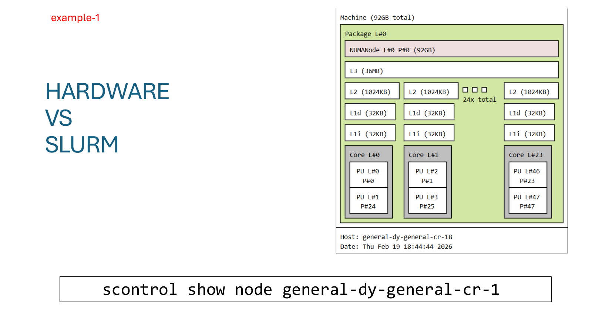
这一页是 example-1，把 Lecture 7 学的两类知识对上：硬件物理拓扑（hwloc / lstopo 的视角）和 SLURM 看到的资源（调度器视角）。两者描述的是同一台节点，但切入角度不同。
右边方框 = hwloc / lstopo 输出（硬件视角）
这种树形方框图是 lstopo 命令的标准输出，从外往内是 Machine → Package → NUMANode → Caches → Cores → PU。右边那台节点的内层结构：
- Machine (92GB total) —— 整台节点 92GB 内存。
- Package L#0 —— 一个 CPU socket（这台机器只插了一颗 CPU）。
- NUMANode L#0 P#0 (92GB) —— 一个 NUMA 节点。本机只有一个 socket，所以也只有一个 NUMANode。
- L3 (36MB) —— 全核共享的 last-level cache。
- L2 (1024KB) × 24 —— 24 个独立的 L2，每个核一个。
- L1d (32KB) + L1i (32KB) —— 数据 / 指令 L1 各 32KB，每核独占。
- Core L#0 ... Core L#23 —— 24 个物理核。
- 每个 Core 内部 2 个 PU —— 这是 SMT / hyperthreading。Core L#0 里有 PU L#0 (P#0) 和 PU L#1 (P#24)，是同一个核共用执行单元的两个逻辑处理器。
所以这台节点：1 socket × 1 NUMANode × 24 cores × 2 PU = 48 个 logical CPU。Linux nproc 看到的就是 48。
关于 PU 编号 P#0 和 P#24
Linux 给逻辑 CPU 编号的惯例：先把所有物理核排完，再轮 SMT 兄弟。所以 24 核机器上：
Core 0 → PU 编号 0 和 24
Core 1 → PU 编号 1 和 25
...
Core 23 → PU 编号 23 和 47
知道这个编号规则，taskset -c 0,1,2,3 锁定的是 4 个不同的物理核（不会两个挤在一个核上）；如果写 0,24 就是同核的 2 个 SMT 兄弟（性能可能反而差）。
底下命令 = SLURM 视角
scontrol show node general-dy-general-cr-1
这个命令问 SLURM 调度器："你眼里这台节点有多少 CPU、多少内存、当前哪些资源被占用、节点是不是 idle"。SLURM 不直接看硬件，它读的是自己的配置文件 + 节点上 slurmd 守护进程上报的信息。典型输出会包含：
CPUTot=48 —— SLURM 认为这台节点有 48 个 CPU（注意：默认它把 PU 当 CPU 算）RealMemory=92160 —— 内存（MB）State=IDLE 或 ALLOCATED —— 现在有没有被占CfgTRES=cpu=48,mem=92G,... —— 节点的 trackable resources
为什么要同时知道这两个视角
写 SLURM 作业脚本时你写 --cpus-per-task=4，SLURM 给你 4 个 "CPU"，但具体是哪 4 个取决于硬件。如果你想避免性能踩坑（比如 4 个任务被分到同一个物理核的 SMT 兄弟，或跨 NUMA 节点造成内存远程访问），就得：
- 用
lstopo 看物理拓扑
- 用
scontrol show node 确认 SLURM 是否暴露了所有硬件
- 用
--cpu-bind / --hint=nomultithread 等参数把 task 绑到合理位置
💡 记忆点：lstopo 给你的是"硬件长什么样"，scontrol show node 给你的是"SLURM 让你看到什么、能用多少"。两者不一定一致 —— 集群管理员可能在 SLURM 配置里只暴露物理核（不开 SMT）、或预留一部分给系统进程。要诊断分配问题，必须同时看两边。
SMT 是什么？"SMT 兄弟"是什么？taskset -c 0,1 写的是 PU 还是物理核？
SMT = Simultaneous Multi-Threading（同时多线程，Intel 商品名 Hyper-Threading）。一个物理核在 OS 眼里"伪装"成两个逻辑处理器（PU），共享 ALU/FPU/L1/L2，各自只有独立的寄存器和 PC。目的：当一个线程因 cache miss 等内存而停下时，另一个线程趁机用空闲的执行单元，提高利用率。
"SMT 兄弟"就是同一个物理核里那两个 PU。它们是兄弟是因为物理上挤在同一个核里、抢同一套真实执行单元。如果两个 CPU 密集型任务被绑到一对 SMT 兄弟上，4 个线程要抢 2 套执行单元，可能比绑到 4 个独立物理核慢 30~50%。
taskset -c 接的永远是 PU 编号（OS-visible CPU 号），不是物理核号。Linux 没有直接指定物理核的方式。但因为编号惯例是"先排完所有物理核的第一个 PU、再排兄弟 PU"，所以 24 物理核机器上：
PU 0..23 → 24 个核各自的第一个 PU（不同核）
PU 24..47 → 24 个核各自的第二个 PU（兄弟）
PU 0 与 PU 24 同核；PU 0 与 PU 1 不同核
所以 taskset -c 0,1 = PU 0 和 PU 1，恰好落在 Core 0 和 Core 1 两个不同物理核 ✅；taskset -c 0,24 = 同核两兄弟 ❌。能不能避开 SMT 兄弟，靠的是记住编号惯例。验证用 lstopo --no-io 或 cat /proc/cpuinfo | grep -E "processor|core id"。
scontrol show node general-dy-general-cr-1 各部分是什么意思？lstopo / scontrol 全称是什么？
命令拆解：
scontrol —— SLURM 控制台工具show —— 子命令，只读查询node —— 要查的对象类型是节点general-dy-general-cr-1 —— 节点名（管理员命名）
缩写全称对照：
| 缩写 | 全称 | 来源 |
|---|
lstopo | list topology | hwloc (Hardware Locality) 项目 |
scontrol | SLURM control | SLURM |
srun / sbatch / squeue | SLURM run / batch / queue | SLURM 命令族都以 s 开头 |
SLURM | Simple Linux Utility for Resource Management | — |
PU | Processing Unit | hwloc 术语 |
MPI | Message Passing Interface | — |
SLURM 是不是和 OpenMP / MPI 一样有专门维护团队？
都有专门维护，但SLURM 是一个具体软件，OpenMP / MPI 是规范，结构不同。
| 是什么 | 主要维护者 | 实现 |
|---|
| SLURM | 一个具体的软件（一份开源代码） | SchedMD 公司 + 社区贡献 | 全世界集群装的就是这一份 |
| OpenMP | 规范文档 | OpenMP ARB（Intel/AMD/NVIDIA/IBM/HPE 等行业联盟） | 各编译器自己实现：GCC、Clang、Intel ICX、NVIDIA HPC SDK |
| MPI | 规范文档 | MPI Forum（学术 + 工业联盟） | 多个并存：Open MPI、MPICH、MVAPICH、Intel MPI、Cray MPI |
实际影响：你换集群从 Open MPI 切到 Intel MPI，MPI_Send 那行代码不用改（同一个标准的不同实现）；但你几乎不会从 SLURM 换到"另一个 SLURM 实现"，要换就是直接换成完全不同的调度器（PBS / LSF / Kubernetes）。
Slide 6 — Why Distributed Parallelism?（回顾）
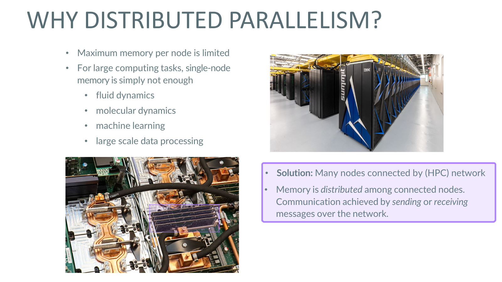
这页和 Lecture 7 Slide 8 内容一致 —— 单节点内存有上限（fluid dynamics / molecular dynamics / ML / large-scale data 这四类典型工作负载装不下），所以要把计算分布到多节点上，节点之间通过高速网络发消息通信。
详细解释见 Lecture 7 笔记的对应章节，这里不重复展开。
Slide 7 — Recall: Processes and Threads（回顾）
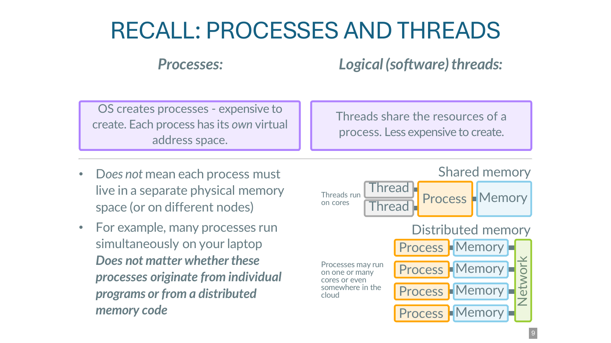
这页和 Lecture 7 Slide 11 内容一致 —— 进程有独立的虚拟地址空间（创建贵），线程共享所属进程的资源（创建便宜）。MPI 的并行单位是进程，不是线程；进程"独立地址空间"不意味着必须在不同物理机上 —— 多个 MPI 进程可以全部跑在一台笔记本上。
右边两图分别是 shared memory（OpenMP 模型）和 distributed memory（MPI 模型），详细解释见 Lecture 7 笔记。
Slide 8 — Hello MPI（第一个 MPI 程序的完整生命周期）
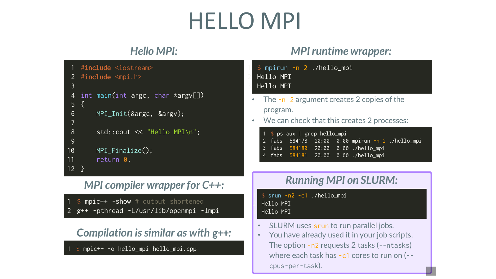
这一页把一个 MPI 程序从源码到运行的完整流程过一遍：写代码 → 编译 → 用 mpirun 启动 → 用 SLURM srun 启动。每一步都对应一个工具。
1. 最小 Hello MPI 源码
#include <iostream>
#include <mpi.h>
int main(int argc, char *argv[]) {
MPI_Init(&argc, &argv); // ← 进入 MPI 世界，必须第一行调用
std::cout << "Hello MPI\n";
MPI_Finalize(); // ← 退出 MPI 世界，必须在结束前调用
return 0;
}
注意：每个 MPI 程序必须用 MPI_Init 开头、MPI_Finalize 收尾。两者之间才能调用其他 MPI 函数。MPI_Init 接收 argc、argv 的指针 —— 因为 MPI 启动器（mpirun）会往参数里塞自己的参数，MPI_Init 要把它们抽走再交给你。
2. mpicxx —— C++ 编译器包装器
mpicxx -o hello_mpi hello_mpi.cpp
mpicxx 不是新的编译器 —— 它包装系统里的 g++（或 clang++），自动加上 MPI 需要的头文件路径和库。用 -show 看包装器实际跑了什么：
$ mpicxx -show
g++ -pthread -L/usr/lib/openmpi -lmpi # 大致这样
所以 mpicxx 等于 g++ + 一堆 -I/-L/-l 标志，省得你手写。Lecture 7 slide 12 讲过：你的源码不依赖具体 MPI 实现，但编译时要链接到具体实现的 libmpi.so，mpicxx 就负责选对那个。
3. mpirun —— 启动器
mpirun -n 2 ./hello_mpi
-n 2 表示启动 2 份程序拷贝。这两份是独立的 OS 进程，不是线程。可以另开终端验证：
$ ps -aux | grep hello_mpi
user 5641 ... ./hello_mpi
user 5642 ... ./hello_mpi ← 真的是两个进程，PID 不同
每个进程独立运行 main()，所以输出会看到两次 "Hello MPI"。这是 MPI 的核心模型 —— SPMD（Single Program, Multiple Data）：同一份代码、多个进程实例、靠 rank 区分行为。
4. srun —— SLURM 上的启动器
srun ./hello_mpi
在集群上你不直接 mpirun，要用 SLURM 的 srun。它会读你 sbatch 脚本里的资源声明：
#SBATCH --nodes=2
#SBATCH --ntasks-per-node=4
#SBATCH --cpus-per-task=1
srun ./hello_mpi # → 启动 2×4 = 8 个 MPI 进程
srun 知道你被分到了哪几台节点、各自有多少核，自动把进程分布到正确位置。mpirun 在 SLURM 环境下也能用，但 srun 跟调度器集成更紧，是推荐做法。
💡 三层工具的角色：mpicxx 管编译（产生可执行文件），mpirun/srun 管启动（同时拉起 N 份进程），代码里的 MPI_Init/MPI_Finalize 管程序内的 MPI 上下文初始化/清理。这三层各自独立，理解它们的边界对调试很关键。
ps -aux | grep hello_mpi 这条命令在做什么？
整体目的：列出系统所有进程，过滤出名字含 hello_mpi 的几行，眼见为实地确认 mpirun 真的拉起了 N 个独立的 OS 进程。
ps = process status。三个字母选项：
a —— all users，显示所有用户的进程u —— user-oriented format，输出 USER / PID / %CPU / %MEM / VSZ / RSS / STAT / TIME / COMMAND 这套人类友好列x —— 包含没有控制终端的进程（daemon、后台任务）
纯 BSD 写法是 ps aux（无连字符），GNU 写法是 ps -ef，ps -aux 是混写但 Linux 兼容（会出 warning 后当 ps aux 处理，效果一样）。
管道 |：把 ps 的标准输出喂给后面 grep 的标准输入。
grep hello_mpi = globally search regex and print，从输入里挑出含 hello_mpi 字符串的行，过滤掉其他几百个无关进程。
常见小坑：grep hello_mpi 自己也是一个进程，命令行里有这串字符，会把自己匹配出来。规避：写成 grep [h]ello_mpi（中括号让正则不匹配字面 [h]ello_mpi 这串），或直接用 pgrep hello_mpi（pgrep 不会匹配到自己）。
Slide 9 — Anatomy of an MPI Message（一条 MPI 消息长什么样）
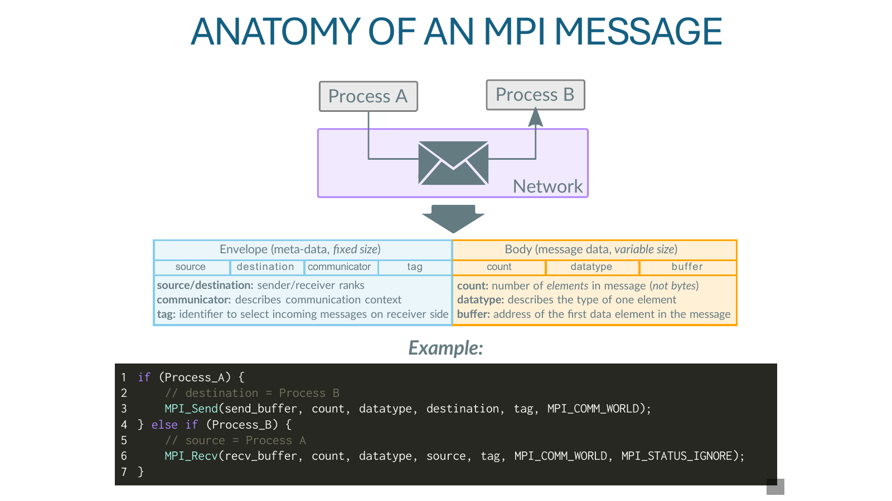
这一页拆开一条 MPI 消息的内部结构。每条消息分两块：Envelope（信封，元数据，定长） 和 Body（消息体，实际数据，变长）。这种"信封 + 内容"的设计是 MPI 整套 API 的根基。
Envelope（信封）—— 4 个字段
- source —— 发送方 rank
- destination —— 接收方 rank
- communicator —— 这条消息属于哪个 communicator（实际放进去的是 context_id，见 Lecture 7 slide 17）
- tag —— 用户自定义的整数标签，让接收方能挑选感兴趣的消息
Body（消息体）—— 3 个字段
- count —— 元素个数（注意：不是字节数）
- datatype —— 每个元素的类型，例如
MPI_INT / MPI_DOUBLE
- buffer —— 第一个元素的内存地址
为什么是 "count + datatype" 而不是 "bytes"？
因为 MPI 要支持异构集群 —— 不同节点可能字节序（big-endian vs little-endian）、字长不同。MPI 知道你发的是 100 个 MPI_INT，就能在两端做必要的字节序转换；如果只告诉它 "400 字节"，它就不知道怎么解释这堆字节。
这也是为什么 MPI 自定义类型（derived datatypes，例如发送一个 struct）比手撸序列化优雅：你只需声明结构布局，MPI 库自动处理跨平台细节。
典型 Send / Recv 配对
if (Process_A) {
// destination = Process B
MPI_Send(send_buffer, count, datatype, destination, tag, MPI_COMM_WORLD);
} else if (Process_B) {
// source = Process A
MPI_Recv(recv_buffer, count, datatype, source, tag, MPI_COMM_WORLD, MPI_STATUS_IGNORE);
}
对照 envelope：destination（在 Send 里）/ source（在 Recv 里）/ tag / MPI_COMM_WORLD 这 4 个就是 envelope 字段；buffer / count / datatype 这 3 个是 body 字段。完全对应。
💡 设计要点：envelope 定长，让接收方不读 body 就能匹配消息（看 source/tag/comm 是否合心意）—— 这样 MPI 实现可以做 "header 先到、data 后传" 的优化。Body 是变长 + 类型化，让 MPI 自己处理跨架构细节。
Slide 10 — Blocking Point-to-Point Communication（阻塞式点对点通信）
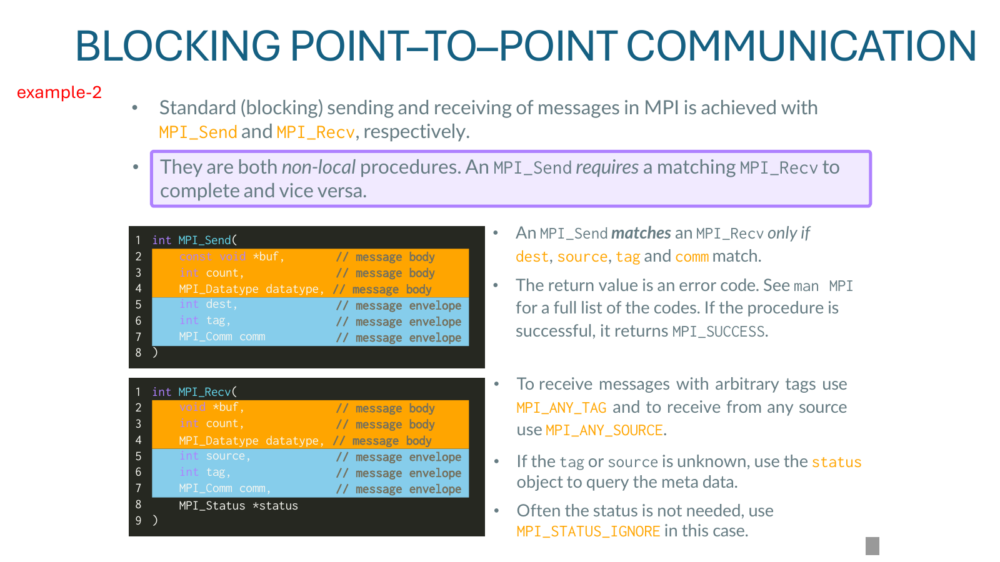
这页是 example-2，把 MPI_Send 和 MPI_Recv 这两个最基础的 API 摊开看签名 + 各种细节参数。"Blocking"（阻塞式）是关键词，意思是函数返回前调用方会被卡住等待。
函数签名
int MPI_Send(const void *buf, int count, MPI_Datatype datatype,
int dest, int tag, MPI_Comm comm);
// ↑ body ↑ ↑ envelope ↑
int MPI_Recv(void *buf, int count, MPI_Datatype datatype,
int source, int tag, MPI_Comm comm,
MPI_Status *status); // ← 比 Send 多一个 status
关键性质：non-local（非本地完成）
An MPI_Send requires a matching MPI_Recv to complete and vice versa. 一对配对的 Send/Recv 必须双方都到齐才算完成 —— 这是 standard MPI_Send 的 non-local 性质（和 "blocking" 是两个独立概念，详见下方 Q&A）。
"matching" 的判定条件：发送方的 (dest, tag, comm) 必须和接收方的 (source, tag, comm) 在同一对 envelope 上对齐。任何一项不一致，消息就投递不到。
返回值
返回的是 error code。成功时返回 MPI_SUCCESS；失败时返回的常量在 man MPI_Send 里有完整列表。生产代码应该检查返回值；快速例子里通常忽略。
通配符：MPI_ANY_TAG 和 MPI_ANY_SOURCE
有时你不知道下一条消息从谁发来、用什么 tag。这时把 source 写成 MPI_ANY_SOURCE、tag 写成 MPI_ANY_TAG，MPI_Recv 就会接受任何匹配的消息。
MPI_Recv(buf, count, MPI_INT,
MPI_ANY_SOURCE, MPI_ANY_TAG, MPI_COMM_WORLD,
&status);
用 status 查"实际是谁发的、用了什么 tag"
如果用了通配符，你常常需要事后知道实际的 source / tag。这时 MPI_Status 结构体派上用场：
MPI_Status status;
MPI_Recv(buf, ..., MPI_ANY_SOURCE, MPI_ANY_TAG, ..., &status);
int actual_source = status.MPI_SOURCE;
int actual_tag = status.MPI_TAG;
int actual_count;
MPI_Get_count(&status, MPI_INT, &actual_count); // 实际收到多少个 INT
如果你不在乎这些（确定的 source/tag 配对），传 MPI_STATUS_IGNORE 让 MPI 跳过填充 status，省一点开销：
MPI_Recv(buf, ..., source, tag, comm, MPI_STATUS_IGNORE);
💡 阻塞的"代价"和"安全"：阻塞 = 返回时 buffer 可以安全复用（详见下面 Q&A），逻辑简单。代价是：如果 Send 早于 Recv 调用、或者两个进程同时只 Send 不 Recv，就会死锁。Lecture 后面会引入非阻塞版本（MPI_Isend/MPI_Irecv）来解决死锁和重叠通信/计算的问题。
Blocking vs Non-local 是同一回事吗？"双方到齐" 到底是什么时刻？默认 MPI_Send 算哪种？
这是两个独立的概念，正交的两个维度，不能等同。
Blocking 的定义：调用返回时，buffer 可以安全复用 / 读取。仅此而已，不涉及对方进程。MPI_Send 返回 → 我可以改写 send_buf；MPI_Recv 返回 → recv_buf 里是已收到的完整数据。
Non-local 的定义：操作的完成时机依赖于另一个进程的状态。即"我什么时候返回，要看对方做没做某件事"。
两者组合出 4 种类型：
| Local（只看自己） | Non-local（要看对方） |
|---|
| Blocking | MPI_Bsend（拷到用户提供的 buffer 立即返回） | MPI_Ssend（必须等接收方 post 了 Recv 才返回） |
| Non-blocking | MPI_Isend（小消息时立即返回） | MPI_Issend（synchronous + immediate） |
记忆：Blocking 关心"自己 buffer 何时安全"；Non-local 关心"是否要等对方"。可以是 blocking + local（MPI_Bsend），也可以是 non-blocking + non-local（MPI_Issend）。
"双方都到齐" 具体到哪一刻：这特指 synchronous send。MPI 标准定义 MPI_Ssend 完成的条件是"接收方已 post 了配对的 MPI_Recv，且接收操作已开始读"，不要求 数据已被全部读完。但因为 synchronous 不走 system buffer，等 MPI_Ssend 返回时实际上数据基本已经流到接收方那边了。
默认 MPI_Send（无字母前缀）的归类：MPI 标准把它归为 blocking + non-local。但具体怎么实现由 MPI 库自己定，标准允许两种：
- 小消息（< eager threshold，通常 ~16~64KB）：走 eager 协议，拷到内部 system buffer 立即返回。表现像 local —— 接收方还没 post Recv 也能立刻返回。
- 大消息（≥ threshold）：走 rendezvous 协议，先发"我有大数据"通告，等接收方 ack，才传数据。真正 non-local。
实践教训：写代码必须按 non-local 防御性设计。否则会遇到经典 bug —— 测试时（小数据）跑得好好的，上 production（大数据）必死锁：
// rank 0 和 rank 1 互相 Send/Recv
if (rank == 0) {
MPI_Send(buf, N, MPI_INT, 1, 0, comm); // N 大时卡在这里等 rank 1 收
MPI_Recv(buf, N, MPI_INT, 1, 0, comm, ...);
} else if (rank == 1) {
MPI_Send(buf, N, MPI_INT, 0, 0, comm); // N 大时卡在这里等 rank 0 收
MPI_Recv(buf, N, MPI_INT, 0, 0, comm, ...);
}
// N 小：两边 eager 都立刻返回 → 跑通
// N 大：两边都在等对方 Recv → 死锁
规避：用 MPI_Sendrecv（一个调用同时收发）、按 rank 奇偶错开收发顺序、或换成 MPI_Isend/MPI_Irecv。
五种 send 速查：
| 函数 | 字母 | Blocking | Local | 完成条件 |
|---|
MPI_Send | standard | ✅ | 实现定（按 non-local 设计） | 实现自己定 |
MPI_Bsend | Buffered | ✅ | ✅ | 拷到用户提供的 buffer |
MPI_Ssend | Synchronous | ✅ | ❌ | 接收方 post 了 Recv 且传输开始 |
MPI_Rsend | Ready | ✅ | ✅ | 程序员承诺接收方已 post Recv |
MPI_Isend | Immediate | ❌ | 通常 ✅ | 立即返回，complete 看 MPI_Wait |
Slide 11 — MPI Barrier（屏障：所有进程一起停一下）
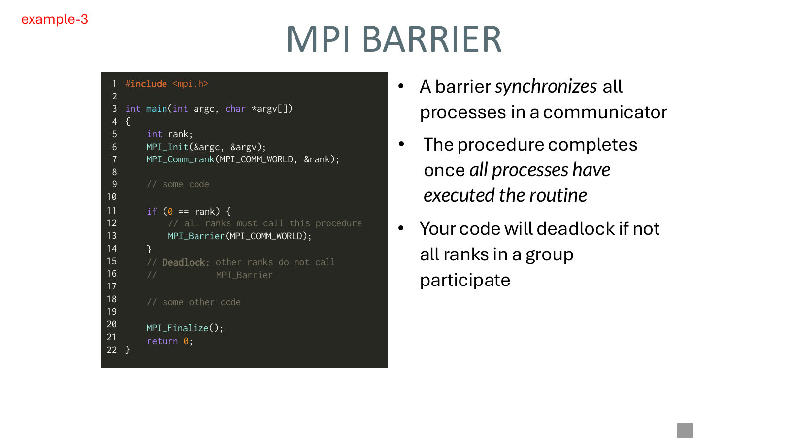
这页是 example-3。MPI_Barrier 是 MPI 的同步原语（synchronization primitive），最简单的 collective 操作 —— 不传数据，只做"所有进程到齐再放行"。
语义
MPI_Barrier(MPI_COMM_WORLD);
三件事一起发生：
- Synchronizes all processes in a communicator —— 同步通信器内所有进程
- Completes once all processes have executed the routine —— 所有进程都调用了之后，函数才返回
- Deadlock if not all ranks participate —— 如果某个 rank 没调用，其他 rank 永远等
常见的死锁陷阱
slide 上的反例：
if (0 == rank) {
// all ranks must call this procedure
MPI_Barrier(MPI_COMM_WORLD);
}
// Deadlock: other ranks do not call MPI_Barrier
只让 rank 0 调 barrier、别的 rank 跳过 —— rank 0 会永远等其他 rank 到达，永远等不到。这是所有 collective 操作的通用规则：要么所有 rank 都调用、要么都不调用。
什么时候真的需要 Barrier
实际上 MPI 程序需要 explicit barrier 的场景比想象少。原因：所有 collective（MPI_Bcast、MPI_Reduce、MPI_Gather 等）本身就有同步语义；点对点 Send/Recv 也有"配对完成"语义。常见真正用到 Barrier 的场景：
- 性能测量：在计时前 / 后插 barrier，确保所有 rank 同时开始 / 结束。
- I/O 同步：所有 rank 写完文件后，barrier 一次再继续，防止后续步骤读到半成品。
- 调试输出：让所有 rank 的 printf 按预期顺序出现。
如果你的代码里到处是 MPI_Barrier，通常是过度同步，会损失并行度。
💡 规则：所有 collective（包括 Barrier、Bcast、Reduce、Gather、Scatter…）都要求communicator 内每个 rank 都调用。漏调一个 = 死锁。这是写 MPI 代码最常见的 bug 之一。
Slide 12 — Blocking Collective Communication（为什么 collective 比手写 Send/Recv 强）
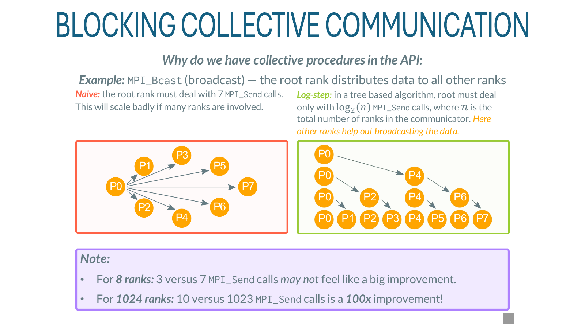
这一页回答一个根本问题：有了 MPI_Send/MPI_Recv，为什么 MPI 还要提供 MPI_Bcast、MPI_Reduce 这些"集合操作"？答案：性能。手写广播是 O(N)，库内置的树形广播是 O(log N)。
例子：MPI_Bcast（广播）的两种实现
场景：root rank 要把一份数据发给其他 7 个 rank（共 8 个 rank）。
Naive 实现（左边橙色框）：
- root 自己一个个调
MPI_Send，发给 P1、P2、…、P7。
- 共 7 次
MPI_Send，root 是瓶颈。
- 规模一大，root 累死，其他 rank 都在等它。
Tree-based 实现（右边绿色框）：
- 第 1 步：root 发给 P4 —— 1 次 send。
- 第 2 步：root 发给 P2，同时 P4 发给 P6 —— 2 次 send 并行。
- 第 3 步：root → P1，P2 → P3，P4 → P5，P6 → P7 —— 4 次 send 并行。
- 总共 log₂(8) = 3 步，每步 root 只做 1 次 send。
为什么差距这么大
关键不在"总 send 次数"，在关键路径长度。Naive 的 root 是串行 7 次，必须排队；Tree 让"已经收到的 rank 帮忙转发"，每一轮参与转发的 rank 翻倍，路径只有 log N。
slide 底部紫色框给出对比：
- 8 ranks：3 vs 7（约 2.3 倍提升 —— 不算特别震撼）
- 1024 ranks：10 vs 1023（100 倍提升 —— 量变到质变）
- 一般化：N ranks，naive O(N)，tree O(log₂ N)
所以 collective 的真正卖点
当你调 MPI_Bcast 时，你不需要知道 MPI 库里用的是 tree 还是 ring 还是别的算法 —— 库厂商已经针对当前网络拓扑挑了最优实现。你写一行 collective 调用，自动得到 log-step 的性能。如果你硬要手写 Send/Recv 模拟广播，几乎必然写出 O(N) 的 naive 版本。
💡 规则：遇到"一对多 / 多对一 / 多对多"的通信模式，先去找有没有现成的 collective（Bcast、Scatter、Gather、Reduce、Allreduce、Alltoall 等）。手写 Send/Recv 几乎一定更慢。
Slide 13 — MPI Broadcast（MPI_Bcast 的语义和 API）
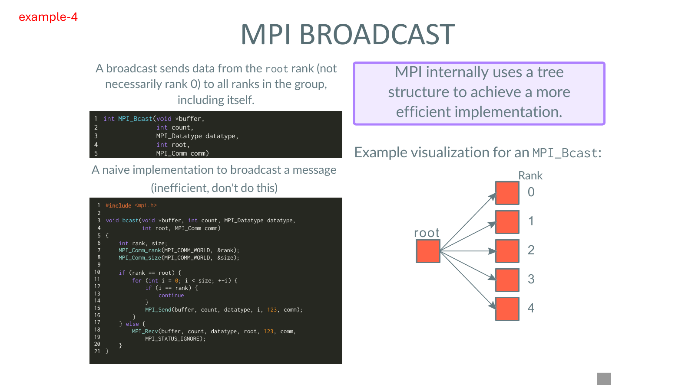
这页是 example-4，把上一页的 broadcast 概念落到具体 API。
函数签名
int MPI_Bcast(void *buffer, int count, MPI_Datatype datatype,
int root, MPI_Comm comm);
注意一个反直觉的点：参数列表里只有一个 buffer，没有 sendbuf / recvbuf 之分。原因：
- 在 root 上，
buffer 是发送源（里面已经有数据）
- 在非 root 上，
buffer 是接收目标（调用前内容无意义，调用后被填满）
所以每个 rank 都要提前分配同样大小的 buffer，然后大家一起调 MPI_Bcast，调完后所有 rank 的 buffer 内容相同。
关键点：root 不一定是 rank 0
"not necessarily rank 0" —— root 是参数传进去的，可以是任意 rank。所有参与的 rank 都必须传同一个 root 值，否则未定义行为。
MPI_Bcast(buf, 100, MPI_INT, /*root=*/3, MPI_COMM_WORLD);
// 所有 rank 都这样写。rank 3 的 buf 是发送源，其他 rank 的 buf 被覆盖。
"naive 版本" 的样子（slide 左下示意）
void bcast(void *buffer, int count, MPI_Datatype datatype,
int root, MPI_Comm comm) {
int rank, size;
MPI_Comm_rank(comm, &rank);
MPI_Comm_size(comm, &size);
if (rank == root) {
for (int i = 0; i < size; ++i) {
if (i == rank) continue;
MPI_Send(buffer, count, datatype, i, 123, comm);
}
} else {
MPI_Recv(buffer, count, datatype, root, 123, comm, MPI_STATUS_IGNORE);
}
}
能跑，但是上一页说过的 O(N) 瓶颈。slide 紧接着告诉你："don't do this"。MPI 库内部用 tree 算法，不写也能享受 log-step 性能。
Tree 可视化（slide 右下）
箭头从 root 出发，分两层扩散到 5 个 rank。每个箭头代表一次内部 Send。这是库帮你画的图 —— 你的代码里看不到这些 Send。
💡 使用模板：先在 root 准备好数据，所有 rank 同时调 MPI_Bcast(buf, count, type, root, comm)，调完后所有 rank 的 buf 内容一致。一次 collective 调用 = 一次同步点。
Slide 14 — MPI Gather（多对一收集）
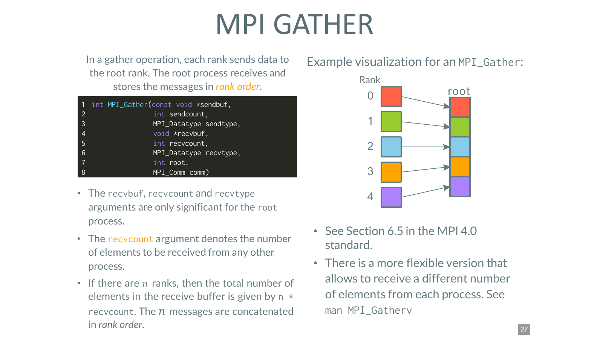
MPI_Gather 是反向广播：每个 rank 把自己的一小块数据交给 root，root 按 rank 顺序拼接成一个大 buffer。
函数签名
int MPI_Gather(const void *sendbuf, int sendcount, MPI_Datatype sendtype,
void *recvbuf, int recvcount, MPI_Datatype recvtype,
int root, MPI_Comm comm);
各参数的含义
- sendbuf / sendcount / sendtype —— 每个 rank（包括 root）都要填，描述自己要交出去的小块数据。
- recvbuf / recvcount / recvtype —— 只有 root 用得上，非 root 可以传
NULL / 任意值都无所谓（"only significant for the root process"）。
recvcount 是"从每个 rank 收多少个"，不是"总共收多少个"。这是最容易踩的坑 —— 例如 8 个 rank 每个发 10 个 INT，recvcount = 10（不是 80），最终 recvbuf 总共 8×10=80 个 INT。- recvbuf 总大小 = N × recvcount（N 是 communicator size），按 rank 顺序拼接。
典型代码
int local = rank * 100; // 每个 rank 自己的一小块（这里只有 1 个 int）
int *gathered = NULL;
if (rank == 0) {
gathered = malloc(size * sizeof(int)); // 只有 root 需要分配
}
MPI_Gather(&local, 1, MPI_INT,
gathered, 1, MPI_INT, // ← recvcount=1 是"每个 rank 收 1 个"
0, MPI_COMM_WORLD);
// 在 root 上：gathered = [0, 100, 200, 300, ...] 按 rank 顺序
右图（slide）的可视化
5 个 rank 各持一块带颜色的格子 → 流向 root 的 recvbuf，rank 0 的块在最上面、rank 4 在最下面，顺序严格按 rank。
变长版：MPI_Gatherv
如果每个 rank 发的数量不同（例如 rank 0 发 5 个、rank 1 发 8 个），MPI_Gather 不够用 —— 它要求每个 rank 都发等量。这时用 MPI_Gatherv：传一个 recvcounts[] 数组（每个 rank 发多少）和一个 displs[] 数组（每段在 recvbuf 里的偏移）。
💡 记忆点：sendcount 和 recvcount 都是按 rank 计的"per-process 数量"。recvbuf 只在 root 端有意义。要变长就上 Gatherv。
Slide 15 — MPI Scatter（一对多分发，Gather 的逆操作）
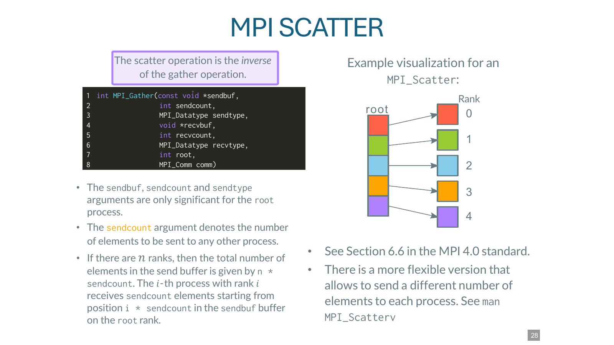
MPI_Scatter 是 MPI_Gather 的反向操作：root 持有一个大 buffer，按 rank 顺序切成等大块，分发给所有 rank（包括它自己）。
函数签名
int MPI_Scatter(const void *sendbuf, int sendcount, MPI_Datatype sendtype,
void *recvbuf, int recvcount, MPI_Datatype recvtype,
int root, MPI_Comm comm);
对照 Gather 看差别
- sendbuf / sendcount / sendtype —— 现在反过来了，只有 root 用，描述要分出去的大数组。
sendcount = "每个 rank 收多少"（不是总长度）。
- recvbuf / recvcount / recvtype —— 每个 rank 都要填，存放自己分到的那块。
分发规则
rank i 收到 sendbuf 中从 i × sendcount 开始、长度 sendcount 的那段。
sendbuf (在 root 上):
[█ █ █ █ | █ █ █ █ | █ █ █ █ | █ █ █ █]
↑ rank 0 ↑ rank 1 ↑ rank 2 ↑ rank 3
每段 sendcount=4 个元素
典型代码
int *big = NULL;
if (rank == 0) {
big = malloc(size * 4 * sizeof(int));
for (int i = 0; i < size * 4; i++) big[i] = i;
}
int local[4];
MPI_Scatter(big, 4, MPI_INT, // ← sendcount=4，每个 rank 收 4 个
local, 4, MPI_INT,
0, MPI_COMM_WORLD);
// rank 0 的 local = [0,1,2,3]
// rank 1 的 local = [4,5,6,7]
// rank 2 的 local = [8,9,10,11]
// ...
变长版：MPI_Scatterv
和 Gatherv 对应：每个 rank 收的数量不同时，用 MPI_Scatterv，传 sendcounts[] + displs[]。
💡 Gather/Scatter 对偶：参数列表几乎一模一样，只是"数据流向"反转。MPI_Gather 把碎片拼成整体（每 rank → root），MPI_Scatter 把整体切成碎片（root → 每 rank）。两者都是 collective，要求 communicator 内所有 rank 调用。
Scatter 中文是什么意思？典型代码里的 size 是哪来的、什么含义？
Scatter 中文 = 散发 / 分散 / 撒。字面意思就像撒种子，从一处分散到多处。MPI_Scatter 的语义就是这样：root 把一个数组切成 N 段，每个 rank 拿一段。反义词是 MPI_Gather（聚拢）。和 MPI_Bcast 的区别在于"切不切片"—— Bcast 是每个 rank 拿完整副本，Scatter 是每人一段。
典型代码里的 size 是 communicator 内 rank 总数（= MPI 进程总数），按惯例通过 MPI_Comm_size 获取：
int rank, size;
MPI_Comm_rank(MPI_COMM_WORLD, &rank); // 我是几号
MPI_Comm_size(MPI_COMM_WORLD, &size); // 总共几个 rank
这两行几乎是每个 MPI 程序开头的固定开场，所以教学幻灯片经常省略不写、直接用 rank 和 size。在 MPI_COMM_WORLD 里，size = mpirun -n / SBATCH 总 task 数。如果用 MPI_Comm_split 划分子 communicator，那子 comm 的 size 就是子 comm 的 rank 数，不是全局。
Slide 16 — MPI Allgather（每个 rank 都拿到完整结果的 Gather）
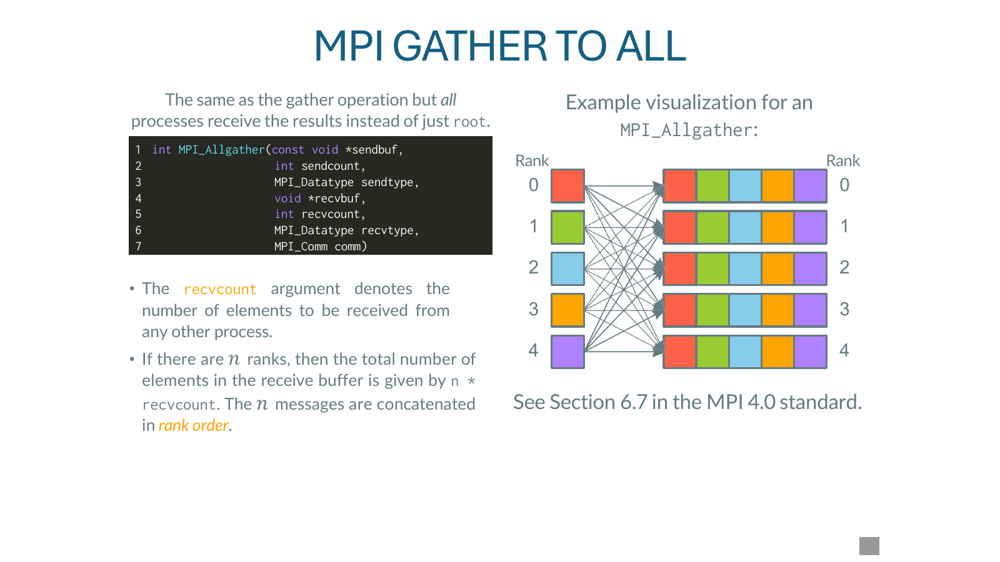
MPI_Allgather = MPI_Gather + MPI_Bcast 的语义合并版。每个 rank 把自己的小块发出去，所有 rank（不只是 root）都拿到拼接后的完整数组。
函数签名（注意：没有 root 参数）
int MPI_Allgather(const void *sendbuf, int sendcount, MPI_Datatype sendtype,
void *recvbuf, int recvcount, MPI_Datatype recvtype,
MPI_Comm comm);
对照 MPI_Gather —— 少了 int root 参数。因为不再有"特殊的接收方"，所有 rank 地位平等。
语义
- recvcount 仍然是从每个 rank 收多少（per-process count），不是总长度。
- recvbuf 总大小 = N × recvcount 字节（N = comm size），按 rank 顺序拼接。
- 每个 rank 都要分配 recvbuf —— 不像 Gather 只有 root 需要。
- 调用结束后，所有 rank 的 recvbuf 内容完全相同。
典型代码
int local = rank * 100; // 每个 rank 自己的小块
int *all = malloc(size * sizeof(int)); // 所有 rank 都要分配
MPI_Allgather(&local, 1, MPI_INT,
all, 1, MPI_INT,
MPI_COMM_WORLD);
// 调用后：每个 rank 的 all[] = [0, 100, 200, ..., (size-1)*100]
什么时候用
当所有 rank 都要看到全局信息时。例如：每个 rank 算出自己一块数据的统计值（最大值、长度等），后续计算每个 rank 都要参考别的 rank 的统计。手写 = Gather 到 root + Bcast 回来，两步；Allgather 一行搞定，库内部还能用更聪明的算法（不用所有数据先汇集到 root，可以直接环形 / butterfly 交换）。
💡 Allgather = Gather + Bcast 一体化。没有 root 概念。当所有 rank 都需要完整结果时优先用，比手写 Gather+Bcast 性能更好。
Slide 17 — MPI Alltoall（"分布式矩阵转置"）
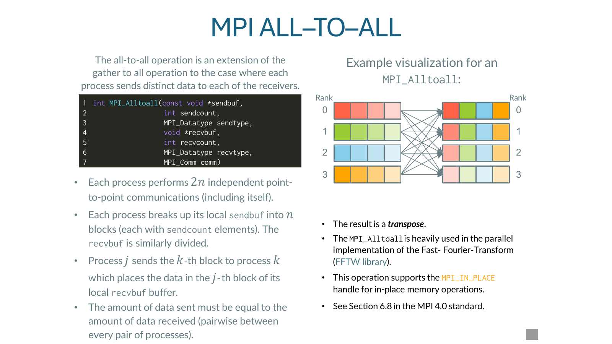
MPI_Alltoall 是 collective 里最复杂的常用模式。每个 rank 都把自己的 sendbuf 切成 N 块（N = comm size），把第 k 块发给 rank k。同时，每个 rank 收到来自所有其他 rank 的一块数据，按 rank 顺序拼成 recvbuf。结果相当于分布式矩阵转置。
函数签名
int MPI_Alltoall(const void *sendbuf, int sendcount, MPI_Datatype sendtype,
void *recvbuf, int recvcount, MPI_Datatype recvtype,
MPI_Comm comm);
语义（slide 上的 4 条要点）
- 每个 rank 执行 2N 次点对点通信（包括发给自己）—— N 次发 + N 次收。
- sendbuf 被切成 N 块，每块 sendcount 个 sendtype 元素。recvbuf 同理。
- rank j 的 sendbuf 第 k 块 会落到 rank k 的 recvbuf 第 j 块。
- 每个 rank 发出去的总元素数 = 收到的总元素数（对称）。
"分布式转置"的直觉
把每个 rank 的 sendbuf 想成矩阵的一行，整个集群的数据组成一个 N×N 矩阵：
调用前 (每行是一个 rank 持有的 sendbuf):
rank 0: [A0 A1 A2 A3]
rank 1: [B0 B1 B2 B3]
rank 2: [C0 C1 C2 C3]
rank 3: [D0 D1 D2 D3]
调用后 (每行是一个 rank 持有的 recvbuf):
rank 0: [A0 B0 C0 D0] ← 原矩阵的第 0 列
rank 1: [A1 B1 C1 D1] ← 原矩阵的第 1 列
rank 2: [A2 B2 C2 D2]
rank 3: [A3 B3 C3 D3]
就是把"每行存一行"重排成"每行存一列"。
典型用途：并行 FFT
slide 提到 "The MPI_Alltoall is heavily used in the parallel implementation of the Fast-Fourier-Transform (FFTW library)."
FFT 需要先对每行做 1D FFT、再对每列做 1D FFT。在分布式存储下，第二步前需要把"按行分布"重排成"按列分布"——这正是 Alltoall。FFTW 的并行版几乎瓶颈就在 Alltoall 上，所以这个原语在 HPC 里非常重要。
注意：MPI_IN_PLACE
slide 提到 "This operation supports the MPI_IN_PLACE handle for same-memory operations." —— 如果你不在乎 sendbuf 被覆盖，可以传 MPI_IN_PLACE 作为 sendbuf，省一份 buffer。具体语义和心智模型见下方 Q&A。
💡 开销很重：Alltoall 的总通信量是 O(N² × sendcount)，是 collective 里最贵的。能避免就避免；非用不可时，库会做最优算法（butterfly、bruck、scatter-gather 等）。
MPI_IN_PLACE 到底是什么？是不是"自己不用发自己"？为什么对 Alltoall 特别有用？
核心语义：让 sendbuf 和 recvbuf 共用同一块内存，省一份单独的 buffer。不是"省去自己发自己"——后者只是底层实现的副作用。
心智模型：同一块 buffer 在调用前后承担不同的语义角色。调用前装"要发的数据"，MPI 库执行通信，调用后这块内存里就是"收到的数据"。从用户视角：buffer 时分复用。MPI 库内部负责保证语义切换时数据不丢（小数据先内部备份再交换；大数据用精心设计的算法按通信顺序逐段就地刷写）。
Alltoall 上的具体用法：
int *buf = malloc(size * count * sizeof(int));
// 调用前：buf[i × count] 装"要发给 rank i 的数据"
for (int i = 0; i < size; i++) fill_data_for(buf + i*count, /*dst=*/i);
MPI_Alltoall(MPI_IN_PLACE, 0, MPI_DATATYPE_NULL, // sendbuf 三参数被忽略
buf, count, MPI_INT, MPI_COMM_WORLD);
// 调用后：buf[i × count] 现在装"从 rank i 收到的数据"
// 自己那格 buf[rank × count] 没动（自己→自己 = 自己）
调用前后语义反转：buf 各 slot 的索引含义从"按 destination"变成"按 source"——相当于一次就地分布式转置。
为什么 Alltoall 上 IN_PLACE 特别有用：因为 Alltoall 的 sendbuf 和 recvbuf 大小完全相等（都是 size × count），合并成一块直接省一半内存。其他 collective 上 IN_PLACE 省的比例没这么夸张：
| Collective | sendbuf | recvbuf | IN_PLACE 省的比例 |
|---|
Allgather | count | size × count | ~1/(size+1)，少 |
Alltoall | size × count | size × count | ~1/2，巨大 |
Allreduce | count | count | ~1/2 |
各 collective 中 IN_PLACE 的"前后语义"：
| Collective | 调用前 buffer 装什么 | 调用后 buffer 装什么 |
|---|
Alltoall | 给各 dst 的数据（按 dst 索引） | 从各 src 收的数据（按 src 索引） |
Allgather | 自己那格已填，其他空 | 全部填满 |
Allreduce | 自己的输入 | 归约结果（覆盖输入） |
Reduce（root 上） | root 自己的输入 | 归约结果（覆盖输入） |
唯一代价：调用后原始要发的数据被覆盖了，无法再回头看"我之前发了啥"。如果后续算法要用，得自己事先备份。
Slide 18 — MPI Allreduce（每个 rank 都得到归约结果）
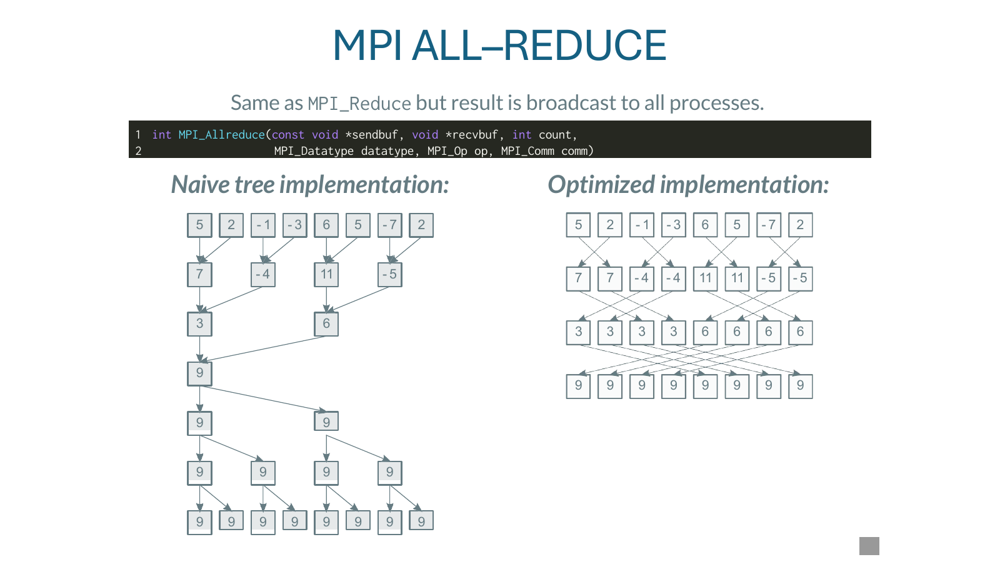
MPI_Allreduce 是 MPI_Reduce + MPI_Bcast 的合并：每个 rank 提供一个值（或一段数组），用某个二元操作（求和、求最大值等）归约出一个全局结果，然后把结果发给所有 rank。
先补一下背景：MPI_Reduce
课件这里直接说 "Same as MPI_Reduce but result is broadcast to all"，假设你已经知道 Reduce。简单复习一下 MPI_Reduce：
int MPI_Reduce(const void *sendbuf, void *recvbuf, int count,
MPI_Datatype datatype, MPI_Op op,
int root, MPI_Comm comm);
每个 rank 提供 sendbuf，库用 op（如 MPI_SUM / MPI_MAX / MPI_MIN / MPI_PROD / 自定义）按元素归约，结果只放在 root 的 recvbuf。
Allreduce 的函数签名
int MPI_Allreduce(const void *sendbuf, void *recvbuf, int count,
MPI_Datatype datatype, MPI_Op op, MPI_Comm comm);
对照 Reduce 少了 int root。每个 rank 的 recvbuf 都被填上同样的归约结果。
两种实现：Naive Tree vs Butterfly
slide 用 8 个数 [5, 2, -1, -3, 6, 5, -7, 2] 求和（结果 = 9）演示两种算法。
Naive tree（左图）：先 reduce 到根（log N 步：相邻两两相加），再从根 broadcast 回去（又一个 log N 步）。总共 ~2 log N 步。前半部分非根节点闲置，效率低。
Butterfly / Recursive doubling（右图）：每一步所有 rank 都参与，互相交换部分和。第 k 步，rank i 和 rank i⊕2^k 交换当前累加值并相加。log N 步之后，每个 rank 都拿到完整结果。总共 log N 步，且全程无空闲 rank。
看右图的演化（每行的方框代表当前每个 rank 持有的"部分和"）：
初始 : 5 2 -1 -3 6 5 -7 2 ← 每个 rank 持有自己的输入
第 1 步 : 7 7 -4 -4 11 11 -5 -5 ← 相邻两两交换并相加
第 2 步 : 3 3 3 3 6 6 6 6 ← 距离 2 的两两交换并相加
第 3 步 : 9 9 9 9 9 9 9 9 ← 距离 4 的两两交换并相加（结果！）
每步 rank i 和 rank i⊕2^k 是 XOR 关系 ——"butterfly" 名字由来：在二进制 ID 上看，第 k 步翻转第 k 位，连线像蝴蝶翅膀。
为什么 Allreduce 是 HPC 的命脉
很多并行算法每步迭代都要做一次全局归约（如：每步检查"全局残差是否够小"、"全局最大误差是多少"）。如果用 naive 的 Reduce + Bcast，2 log N 步意味着扩展到 1024 ranks 需要 ~20 步通信；butterfly 只需 ~10 步。在每秒做几十次迭代的求解器里，差别巨大。
💡 核心点：用 MPI_Allreduce，不要手写 MPI_Reduce + MPI_Bcast。库内部会用 butterfly 或更先进的算法，免费拿到 2× 性能。
Slide 19 — MPI Inclusive Scan（前缀归约：MPI_Scan）
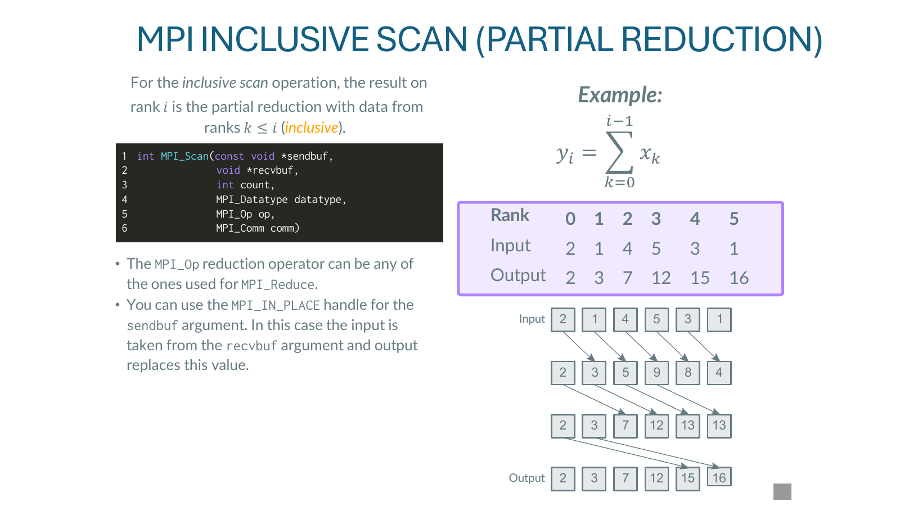
MPI_Scan 是前缀归约（prefix reduction）。Allreduce 是"所有 rank 都拿到全局结果"；Scan 是"rank i 拿到 rank 0..i 的部分归约"，类似数组求前缀和。
函数签名
int MPI_Scan(const void *sendbuf, void *recvbuf, int count,
MPI_Datatype datatype, MPI_Op op, MPI_Comm comm);
签名和 MPI_Allreduce 几乎一样 —— 区别只在语义。
Inclusive 的含义
对 rank i：
yi = x0 ⊕ x1 ⊕ ... ⊕ xi（包含自己，"inclusive"由此得名）
slide 上的具体例子（用 op = SUM）：
Rank : 0 1 2 3 4 5
Input : 2 1 4 5 3 1
Output : 2 3 7 12 15 16
↑ ↑ ↑ ↑ ↑ ↑
2 +1 +4 +5 +3 +1
Rank 0 的输出 = Rank 0 的输入；Rank i 的输出 = Rank 0..i 的累加。
底层算法（recursive doubling）
slide 右下展示了演化过程：
Input : 2 1 4 5 3 1
Step 1: 2 3 5 9 8 4 ← 每个 rank 加上 rank-1 的值
Step 2: 2 3 7 12 13 13 ← 每个 rank 加上 rank-2 的值
Step 3: 2 3 7 12 15 16 ← 每个 rank 加上 rank-4 的值
(最终结果)
每一步 k，rank i 加上 rank i − 2k 的当前值（如果 i − 2k ≥ 0）。log N 步后所有前缀和算完。
MPI_IN_PLACE 选项
slide 注："You can use the MPI_IN_PLACE handle for the sendbuf argument. In this case the input is taken from the recvbuf argument and output replaces this value." —— 不想再分配 sendbuf 时，把 MPI_IN_PLACE 当 sendbuf，让 recvbuf 同时承担输入和输出。
💡 典型用途：(1) 给每个 rank 算"全局编号"（前面所有 rank 的元素总数 = 当前 rank 起始下标）；(2) 计算并行算法里的"截止索引"。
Scan 的 MPI_IN_PLACE 怎么用？它省的是 MPI 内部 buffer 还是用户层 buffer？
普通版 vs IN_PLACE 版的差别只在用户写代码时的变量数：
// 普通版：两块独立内存
int my_input = rank + 1;
int my_result;
MPI_Scan(&my_input, &my_result, 1, MPI_INT, MPI_SUM, MPI_COMM_WORLD);
// IN_PLACE 版：一块内存兼任输入和输出
int my_data = rank + 1;
MPI_Scan(MPI_IN_PLACE, &my_data, 1, MPI_INT, MPI_SUM, MPI_COMM_WORLD);
// 调用前 my_data = 输入；调用后 my_data 被覆盖成结果
slide 那句话的拆解：
- "input is taken from the recvbuf argument" —— sendbuf 被忽略，输入从 recvbuf 那个参数读。所以你必须事先把输入写到 recvbuf 里。
- "output replaces this value" —— 计算结果覆盖掉 recvbuf 里原来的输入。所以原始输入会丢失。
关键澄清：IN_PLACE 节省的是哪一层的 buffer？
| 层级 | 受 IN_PLACE 影响吗 | 说明 |
|---|
| 用户层 API | ✅ 这里才是 IN_PLACE 起作用的地方 | 用户需要分配的变量数：从 2 块（sendbuf + recvbuf）变成 1 块 |
| MPI 库内部算法（如 recursive doubling 的中间临时 buffer、网络收发暂存） | ❌ 无关 | 由 MPI 库自己 malloc/free，不管用不用 IN_PLACE，该用多少照样用多少 |
所以 slide 右下那个"input → step 1 → step 2 → step 3 → output"的演化图描述的是 MPI 库内部算法步骤，那些中间值的存放和 MPI_IN_PLACE 无关。MPI_IN_PLACE 只让你在写调用代码时少声明一个变量，仅此而已。
记忆模型：和 Allreduce / Alltoall 的 IN_PLACE 是同一套——同一块内存在调用前后承担不同语义角色（前为输入，后为结果），用户层"buffer 时分复用"。代价：调用后原始输入被覆盖，后续要用得自己事先备份。
Slide 20 — MPI Exclusive Scan（不含自己的前缀归约：MPI_Exscan）
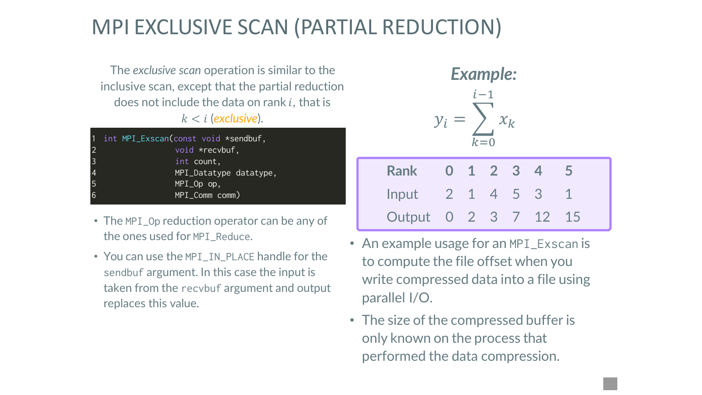
MPI_Exscan 和 MPI_Scan 唯一的区别：不包含自己。对 rank i：
yi = x0 ⊕ x1 ⊕ ... ⊕ xi−1（"exclusive"：不含 xi 自己）
同样的例子对照看：
Rank : 0 1 2 3 4 5
Input : 2 1 4 5 3 1
Inclusive : 2 3 7 12 15 16 ← MPI_Scan
Exclusive : - 2 3 7 12 15 ← MPI_Exscan (rank 0 的结果"未定义")
典型用途：并行 I/O 计算文件偏移
slide 给的实战例子：每个 rank 把自己压缩后的数据写到一个共享文件，需要先算出"自己应该从文件第几个字节开始写"。
过程：
- 每个 rank 知道自己的压缩 buffer 大小
my_size。
- 调
MPI_Exscan(&my_size, &my_offset, 1, MPI_INT, MPI_SUM, comm)。
- 得到的
my_offset = 前面所有 rank 的 size 之和 = 我应该从文件的第几个字节开始写。
- 调
MPI_File_write_at(my_offset, my_data, my_size)。
这就是为什么是 exclusive：你想要的是"前面那些 rank 的总和"，不能把自己的算进去（否则 offset 会跳过自己要写的位置）。
Inclusive 还是 Exclusive？
取决于你想要"包含自己"还是"在自己之前"。前缀求和编号、统计累计 → inclusive；起始偏移、起始索引 → exclusive。
💡 记忆点：两者算法完全一致，差别只在最后是否减去自己的输入。Exscan 在 rank 0 处的输出是"undefined"，使用前先判断 rank。
Slide 21 — Unknown Message Size（消息大小未知时怎么办）
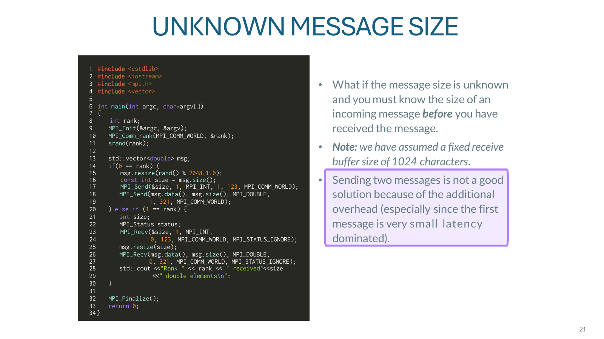
这一页提出一个之前回避的问题：如果发送方动态决定消息长度，接收方提前不知道要分配多大 buffer 怎么办？
之前隐藏的假设
slide 注："We have assumed a fixed receive buffer size of 1024 characters." —— 之前所有例子都偷偷假设 receive buffer 够大。这显然不通用 —— 真实场景里，消息长度可能是动态算出来的（压缩后的字节数、可变长度的字符串等）。
方案 A（不推荐）：先发一条"长度通知"消息
最朴素的想法：
// 发送方
MPI_Send(&msg_len, 1, MPI_INT, dest, 0, comm); // 先发长度
MPI_Send(msg, msg_len, MPI_CHAR, dest, 1, comm); // 再发数据
// 接收方
int msg_len;
MPI_Recv(&msg_len, 1, MPI_INT, src, 0, comm, MPI_STATUS_IGNORE);
char *buf = malloc(msg_len);
MPI_Recv(buf, msg_len, MPI_CHAR, src, 1, comm, MPI_STATUS_IGNORE);
为什么这样不好
slide 紫色框给出原因："Sending two messages is not a good solution because of the additional overhead especially since the first message is very small latency dominated."
翻译："发两条消息" 看起来等成本，但实际不是 —— 每条 MPI 消息都有固定的延迟开销（startup cost：建立连接、握手、协议头）。延迟大概是 1–10 微秒级别，不论消息内容是 1 字节还是 1MB。所以"先发一个 4 字节长度"几乎和"发一条完整消息"一样贵。结果：你为了告诉对方长度，付了一整次大消息的延迟。
更好的方案：让接收方主动"探查"消息
下一页（Slide 22）给出的答案：用 MPI_Probe。它能在不真正接收消息的情况下，先看一眼这条消息的 envelope 和大小，然后再 malloc 正确大小的 buffer 去 Recv。
💡 核心认知：MPI 通信的成本 = 延迟（latency）+ 带宽（bandwidth × size）。小消息几乎全是延迟。所以"凑成一条大消息"通常比"拆成两条小消息"快得多。
Slide 22 — Probing an Incoming Message（先探查再接收：MPI_Probe）
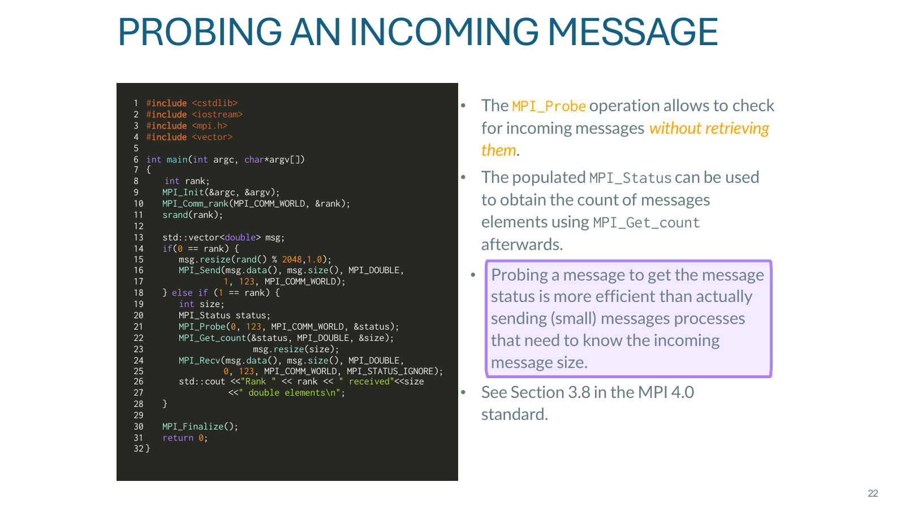
解决上一页问题的"正解"：MPI_Probe 让接收方不消费消息就能拿到 envelope 信息（包括大小），分配好 buffer 之后再 Recv。
函数签名
int MPI_Probe(int source, int tag, MPI_Comm comm,
MPI_Status *status);
它阻塞直到匹配的消息到达接收方，但不读取消息体。返回时 status 已被填上消息的元数据。
slide 上的完整代码（逐行讲解）
场景：rank 0 生成一段随机长度的 double 数组发给 rank 1，rank 1 事先不知道有多长，用 Probe 探查后再分配 buffer 接收。
#include <stdio.h>
#include <stdlib.h>
#include <mpi.h>
#include <vector>
头文件：stdio.h（printf）、stdlib.h（rand/malloc）、mpi.h（MPI API）、<vector>（用 std::vector 自动管理 buffer，避免手动 malloc/free）。
int main(int argc, char *argv[]) {
int rank;
MPI_Init(&argc, &argv);
MPI_Comm_rank(MPI_COMM_WORLD, &rank);
srand(rank);
MPI 标配开场：MPI_Init 进入 MPI 世界、MPI_Comm_rank 取自己的 rank。srand(rank) 用 rank 当随机种子—— 这样 rank 0 和 rank 1 会得到不同的随机数序列（如果都用同一个种子，下面的 rand() 在两边返回值一样，长度就一致了，体现不出"接收方不知道长度"这个测试场景）。
std::vector<double> msg;
声明一个空 vector<double>，两个 rank 都执行这一行。后面发送方往里填数据，接收方先空着、收到 Probe 结果再 resize。
if (0 == rank) {
msg.resize(rand() % 1024, 0.0);
rank 0 进入发送分支。Yoda 条件 0 == rank（常量在前）防止手滑写成 0 = rank——编译器会立刻报错而不是悄悄赋值。rand() % 1024 生成 0~1023 之间的随机长度，resize(N, 0.0) 把 vector 改成 N 个 double、初始值全 0.0。关键：rank 1 完全不知道这个 N 是多少。
MPI_Send(msg.data(), msg.size(),
MPI_DOUBLE, 1, 0, MPI_COMM_WORLD);
发送给 rank 1。逐参数：
msg.data() —— vector 内部数组的首地址（C++11 起的标准方法）。MPI 要原始指针。msg.size() —— 元素个数（= 上一行 resize 的 N）。MPI_DOUBLE —— 数据类型。1 —— destination rank。0 —— tag。MPI_COMM_WORLD —— 通信器。
rank 0 的活到此结束，下面
else if 不会进。
} else if (1 == rank) {
int len;
MPI_Status status;
rank 1 进入接收分支。声明两个变量：len 待会儿装"消息有多少元素"，status 待会儿装 Probe 解出的 envelope。此刻都是垃圾值。
MPI_Probe(0, 0, MPI_COMM_WORLD, &status);
阻塞探查：等一条来自 rank 0、tag 0 的消息到达。注意：这里用的是具体 source/tag（0, 0），不是通配符——因为这个例子里 rank 1 明确知道是谁发的。返回时：status 被填好（含实际 source、tag、内部消息长度），但消息体没被消费，仍在缓冲区里等下面的 Recv。
MPI_Get_count(&status, MPI_DOUBLE, &len);
从 status 解出元素数：MPI 内部存的是字节数，这里告诉它"按 MPI_DOUBLE（8 字节）一个元素算"，结果写回 len。这一行后 len = rank 0 那边 rand() % 1024 当时实际生成的那个数。
msg.resize(len);
现在知道长度了，把 vector resize 到 len 个元素，准备装数据。比手写 malloc(len * sizeof(double)) 优雅——退出 scope 时 vector 自动释放，没有忘记 free 的风险。
MPI_Recv(msg.data(), msg.size(), MPI_DOUBLE,
status.MPI_SOURCE, status.MPI_TAG,
MPI_COMM_WORLD, MPI_STATUS_IGNORE);
真正接收消息体。逐参数：
msg.data() —— 接收 buffer 首地址（resize 之后已分配好）。msg.size() —— 容量（= len，刚好够装）。MPI_DOUBLE —— 数据类型，和发送方一致。status.MPI_SOURCE / status.MPI_TAG —— 用 Probe 报告的具体值。这个例子里其实就是 0/0，但写成 status. 字段是通用模式——即使 Probe 当时用了 MPI_ANY_SOURCE/MPI_ANY_TAG，这里也能精确锁定到刚才探到的那条消息，不会被另一条同时到达的混淆。MPI_STATUS_IGNORE —— 这次 status 不需要再填了（Probe 时已拿全），传 IGNORE 省一点点开销。
Recv 返回后
msg 里就是从 rank 0 收到的完整数据。
std::cout << "rank " << rank << " received "
<< msg.size() << " double elements\n";
}
rank 1 打印一行确认。else if 块结束。其他 rank（如果用 mpirun -n 4 跑）不进任何分支，直接走到下面的 Finalize。
MPI_Finalize();
return 0;
}
清理 MPI 上下文，正常退出。
关键 API：MPI_Get_count
从 MPI_Status 抽取消息长度的辅助函数：
int MPI_Get_count(const MPI_Status *status, MPI_Datatype dtype, int *count);
注意：MPI 内部记录的是字节数，MPI_Get_count 帮你按 dtype 算出元素个数。
为什么 Probe 比"先发长度"快
关键：Probe 不引入新的网络消息。MPI 实现里，发送方发起 MPI_Send 时，通常是 envelope（小、定长）先到接收方的 MPI 库内部，data 还在路上 / 缓冲区里。MPI_Probe 读的就是已经到达的 envelope，不需要额外网络往返。
所以 Probe + Get_count + Recv 这套组合，网络层面只走一条消息，比"长度消息 + 数据消息"省掉一整次延迟。
注意：和 status 通配的配合
用 MPI_ANY_SOURCE / MPI_ANY_TAG probe 之后，务必用 status.MPI_SOURCE 和 status.MPI_TAG 精确匹配 Recv，不要再用通配符 —— 否则可能匹配到"另一条同时到达的消息"，buffer 大小就对不上了。
💡 用法套路：Probe → Get_count → malloc → Recv（用 status.MPI_SOURCE/MPI_TAG 精确匹配）。这是处理"动态长度消息"的标准模式。
Slide 23 — Shift Operations Across Chain of Processes（链式 shift：当心死锁）
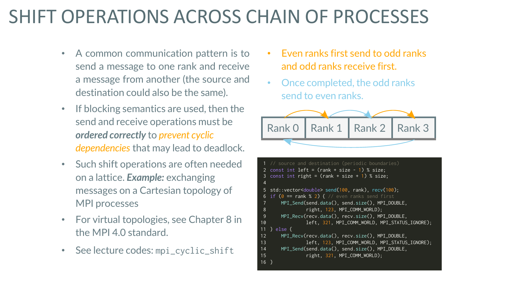
这一页讨论一种常见但容易踩坑的通信模式：每个 rank 同时是发送方又是接收方，向链上的下一位发，从上一位收。一不小心就会死锁。
"shift" 是什么模式
在网格 / 数组的邻居通信里很常见 —— stencil（如 5-point Laplacian）每步都要把自己的 boundary 发给邻居、从邻居收 boundary。slide 上的链式例子：
Rank 0 → Rank 1 → Rank 2 → Rank 3
(每个 rank 把数据发给右边的邻居，从左边的邻居收)
注意 source 和 destination 不是同一个 rank（source = 我左边的，destination = 我右边的）。
为什么会死锁
如果所有 rank 都先 MPI_Send 再 MPI_Recv：
Rank 0: Send(→1) → 等 1 来 Recv
Rank 1: Send(→2) → 等 2 来 Recv
Rank 2: Send(→3) → 等 3 来 Recv
Rank 3: Send(→0?) → 等 0 来 Recv
↑↑↑↑↑
所有 rank 都卡在 Send，没人 Recv 任何东西 → 死锁
MPI_Send 是阻塞 + non-local 完成 ——它要等接收方调 Recv 才能返回。所以这种"全员先 Send" 的模式必然死锁（除非 MPI 实现内部有 buffer 偷偷把 Send 异步化，但这是实现行为，不能依赖）。
解决方案 A：手动错峰（slide 右上）
偶数 rank 先 Send，奇数 rank 先 Recv；之后角色互换。
第 1 阶段:
偶数 rank (0, 2): Send(→ 1, 3)
奇数 rank (1, 3): Recv(← 0, 2)
第 2 阶段:
奇数 rank (1, 3): Send(→ 2, ...)
偶数 rank (0, 2): Recv(← ..., 1)
每一阶段，发送方和接收方都不冲突 —— 不会死锁。但代码冗长且容易写错。
解决方案 B（更优）：MPI_Sendrecv
slide 提到 "If blocking semantics are used, the send and receive operations must be ordered correctly to prevent cyclic dependencies that may lead to deadlock." 然后引出下一页讲的 MPI_Sendrecv —— 一个 API 同时做 Send 和 Recv，MPI 内部保证不死锁。
什么时候用
- Stencil 通信（PDE 求解、CFD）—— 每个 rank 和邻居交换 boundary。
- Cartesian 拓扑下的 shift 操作 —— 例如 2D 网格里"全体向右移一格"。slide 提到 "Such shift patterns are often needed on a lattice. Examples are propagating messages on a Cartesian topology of MPI processes."
- 循环 / pipeline 模式。
💡 规则：链式 shift 永远不要用"全员先 Send"。要么手动错峰（偶 / 奇分组）、要么直接上 MPI_Sendrecv。后者更安全也更常见。
Slide 24 — Shift Operations 续：MPI_Sendrecv 一招解死锁
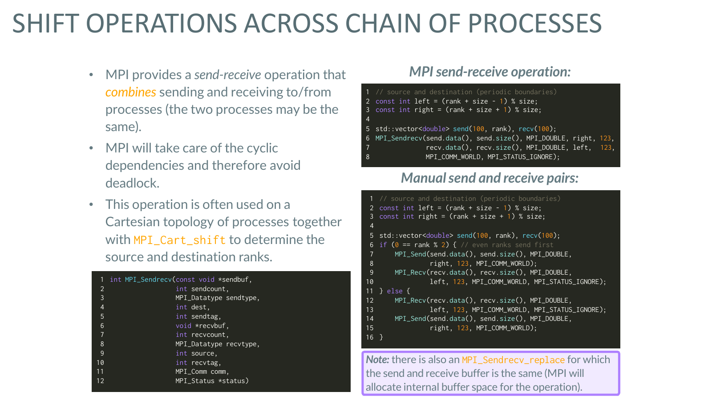
上一页提的 shift 死锁问题，MPI 给的标准答案：MPI_Sendrecv —— 一个调用同时发起 send 和 receive，MPI 实现内部保证不会因 ordering 问题死锁。
函数签名
int MPI_Sendrecv(const void *sendbuf, int sendcount, MPI_Datatype sendtype,
int dest, int sendtag,
void *recvbuf, int recvcount, MPI_Datatype recvtype,
int source, int recvtag,
MPI_Comm comm, MPI_Status *status);
参数列表挺长，但其实就是 MPI_Send 和 MPI_Recv 的参数各一份合起来 —— sendbuf/sendcount/sendtype/dest/sendtag 是发送侧；recvbuf/recvcount/recvtype/source/recvtag 是接收侧。
性质
- "两个进程可以是同一个" —— slide 注："where these two processes may be the same." 你甚至可以让
dest == source == 自己 rank，相当于 send 给自己再 recv 回来（罕见但合法）。
- send 和 recv 用不同的 buffer —— sendbuf 和 recvbuf 必须是两块独立内存，不能重叠。
- MPI 自动处理 ordering —— 库内部知道这是"对称的 send + recv"模式，会用合适算法避免死锁。
- 结果和"手写 send + recv"等价 —— 函数返回时，sendbuf 已发出去、recvbuf 已收到。
典型用法（链式 shift）
int left = (rank - 1 + size) % size; // 左邻居（环形）
int right = (rank + 1) % size; // 右邻居
MPI_Sendrecv(send_data, count, MPI_DOUBLE,
right, /*sendtag=*/0,
recv_data, count, MPI_DOUBLE,
left, /*recvtag=*/0,
MPI_COMM_WORLD, MPI_STATUS_IGNORE);
// 同时：把 send_data 发给右边、从左边收 recv_data —— 不会死锁
配合 MPI_Cart_shift 找邻居
slide 提到 "This operation is often used on a Cartesian topology together with MPI_Cart_shift to determine the source and destination ranks."
MPI_Cart_shift 是 Cartesian 拓扑下的辅助函数：你说"在第 X 维向正方向 shift 1 格"，它返回 source 和 destination rank。然后把这两个 rank 直接喂给 MPI_Sendrecv，不用自己算。这套组合在 stencil 计算里非常常见。
变种：MPI_Sendrecv_replace
slide 注："There is also an MPI_Sendrecv_replace for which the send and receive buffer is the same."
MPI_Sendrecv_replace 用同一个 buffer同时做 send 和 recv —— send 后立即被 recv 内容覆盖。MPI 库内部自动分配临时 buffer 处理这个。优点：buffer 复用、API 更短；缺点：内部多一次内存拷贝，性能稍差。
💡 规则：链式 / 环形 / 邻居通信优先 MPI_Sendrecv。结合 MPI_Cart_shift 自动算邻居 rank。需要省一份 buffer 再考虑 MPI_Sendrecv_replace。
Slide 25 — Non-blocking Point-to-Point Communication（非阻塞通信概览）
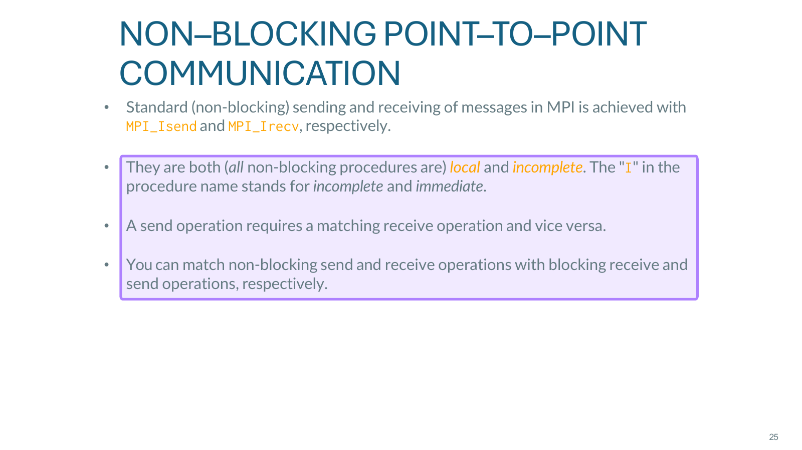
这一页正式引入 非阻塞通信：MPI_Isend 和 MPI_Irecv。Slide 10 学过的 MPI_Send / MPI_Recv 是阻塞版（要等到对面响应才返回）；非阻塞版立即返回一个"句柄"，让你可以边通信边干别的事。
"I" 是什么意思
slide 紫色框："The 'I' in the procedure name stands for incomplete and immediate."
- Immediate（立即返回）—— 函数调用立刻返回，不等通信完成。
- Incomplete（尚未完成）—— 函数返回时通信只是启动了，还没真的传完。你不能立刻用 sendbuf / recvbuf —— 数据可能还在飞。
函数签名（slide 没写出来，但要心里有数）
int MPI_Isend(const void *buf, int count, MPI_Datatype dtype,
int dest, int tag, MPI_Comm comm,
MPI_Request *request); // ← 多返回一个 request 句柄
int MPI_Irecv(void *buf, int count, MPI_Datatype dtype,
int source, int tag, MPI_Comm comm,
MPI_Request *request);
多了 MPI_Request —— 这是 MPI 给你的"通信句柄"，后面用 MPI_Wait / MPI_Test 来检查通信是否完成。
3 条关键性质（slide 要点）
- local（本地完成）—— 不像阻塞版那样需要对面响应，
MPI_Isend/MPI_Irecv 调用在本地立即返回。语义上的"完成"仍然需要对面配对，但 API 调用本身不再卡住。
- 非阻塞 send 仍然需要 matching recv—— "A send operation requires a matching receive operation and vice versa." 通信本身的逻辑不变，只是检查"是否完成"被推迟到
MPI_Wait。
- 可以混用—— "You can match non-blocking send and receive operations with blocking receive and send operations, respectively." 一端用
MPI_Isend，另一端用 MPI_Recv 完全合法。MPI 协议层不区分双方是否阻塞。
使用流程（典型骨架）
MPI_Request req;
MPI_Isend(buf, count, MPI_INT, dest, tag, comm, &req);
// ↑ 立刻返回，buf 不能改！
// ----- 这里可以做其他工作（计算、I/O、其他 MPI 调用）-----
do_some_independent_computation();
// 等通信真的完成
MPI_Wait(&req, MPI_STATUS_IGNORE);
// 现在 buf 可以重用了
非阻塞最大的卖点：通信 / 计算重叠
HPC 里最重要的优化模式之一：把通信"藏"到计算里。例：
开始 Isend / Irecv 邻居 boundary
↓
计算内部点（不依赖 boundary） ← 这部分和上面通信并发进行
↓
Wait 等 boundary 收完
↓
计算依赖 boundary 的点
如果通信耗时和"内部点计算"耗时差不多，理想情况下通信被完全隐藏，加速接近 2 倍。这是阻塞通信永远做不到的。
陷阱
- 不能在 Wait 之前修改 sendbuf / 读 recvbuf —— 数据可能还没传完。常见 bug：在循环里用同一个 buffer 反复 Isend，没等上一次 Wait 就改 buffer。
- 必须配对 Wait（或 Test 直到完成）—— 漏 Wait 会泄漏 request 句柄，最终耗尽资源。
- 检查方式：
MPI_Wait（阻塞直到完成）vs MPI_Test（轮询检查）vs MPI_Waitall / MPI_Testall（一次等多个）。后续课会展开。
💡 核心转变：阻塞版 = "调用 = 完成"；非阻塞版 = "调用 = 启动，MPI_Wait = 完成"。这种分离是计算 / 通信重叠的基础，也是高性能 MPI 代码的核心模式。
"漏 Wait 会泄漏 request 句柄、最终耗尽资源"是什么意思？
MPI_Request 是 MPI 库借给你的资源，类似 C 里的 malloc 或 open 返回的句柄——你不归还，库就一直占着。
背后的机制：每次调 MPI_Isend / MPI_Irecv，MPI 库会在内部分配一块状态（消息指针、目的 rank、传输进度、是否完成等），然后把"指向这块状态的句柄"写到你的 MPI_Request 变量里。MPI 库内部的 request 池是有限的（实现里通常是预分配数组或带上限的动态池）。
MPI_Wait / MPI_Test(flag=1) 是归还操作：只有当 Wait 返回（或 Test 报告 flag=1），MPI 库才知道"这次通信用户处理完了"，然后释放内部状态、把 request 改写成 MPI_REQUEST_NULL、归还 slot 给池。
MPI_Request req;
MPI_Isend(buf, ..., &req); // 内部分配一个 request slot
MPI_Wait(&req, MPI_STATUS_IGNORE); // req 变 MPI_REQUEST_NULL，资源归还
漏 Wait 就是泄漏。库不知道你处理完了没，必须保留那块状态：
for (int i = 0; i < 1000000; i++) {
MPI_Request req;
MPI_Isend(buf, ..., &req); // 每轮新分配一个
// ❌ 没有 MPI_Wait
// 局部 req 被覆盖 → 句柄丢了 → 库里那块状态永远在
}
// 100 万轮后 → 内部池撑爆 → Isend/Irecv 失败 / 程序卡死 / OOM
类比表：
| 忘记调用 | 泄漏的资源 | 后果 |
|---|
free(ptr) | 堆内存 | OOM |
close(fd) | 文件描述符 | 达到 ulimit 后 open 失败 |
close(socket) | socket 句柄 | connect 失败 |
MPI_Wait(&req) | request 句柄 | 池耗尽，后续 Isend/Irecv 失败 |
"Test 直到完成"的含义：MPI_Test(&req, &flag, ...) 只轮询一次，只有 flag == 1 那一次调用才真的清理 request。如果 flag == 0（没完成）就放弃，request 仍在那儿——同样泄漏。所以用 Test 时必须循环到 flag 变 1：
int flag = 0;
while (!flag) {
MPI_Test(&req, &flag, ...);
do_other_useful_work(); // 顺便干别的
}
// flag 终于变 1，request 已被清理
容易踩坑的场景：循环里发了一堆只 Wait 部分；异常退出路径 return 漏 Wait；只调一次 Test 就放弃。防御方法：用 MPI_Waitall(n, requests, statuses) 一次性等一组，少遗漏。
Slide 26 — Non-blocking 的 API 签名（MPI_Isend / MPI_Irecv）
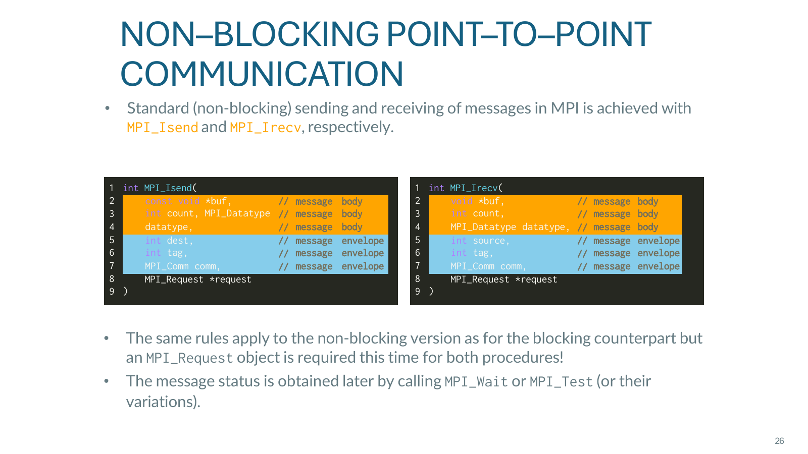
这页把上一页的概念落到具体函数签名上。两个非阻塞 P2P 函数的参数和阻塞版几乎一一对应，区别只在最后多了一个 MPI_Request *request 出参。
int MPI_Isend(const void *buf, int count, MPI_Datatype datatype,
int dest, int tag, MPI_Comm comm,
MPI_Request *request);
int MPI_Irecv(void *buf, int count, MPI_Datatype datatype,
int source, int tag, MPI_Comm comm,
MPI_Request *request);
记忆点
"I" 前缀同时表达两层意思：immediate（调用立刻返回）和 incomplete（操作还没完成）。返回的 MPI_Request 就是后续 MPI_Wait/MPI_Test 用来追踪这次操作的句柄。
注意签名里没有 MPI_Status 出参 —— 函数返回时操作还没完成，状态根本没意义。状态要在 Wait/Test 时才能拿到。
💡 阻塞版的所有参数都保留，多一个 MPI_Request * 出参，这就是非阻塞 P2P 的全部 API 形式差异。
Slide 27 — Communication Completion（MPI_Request 的生命周期）
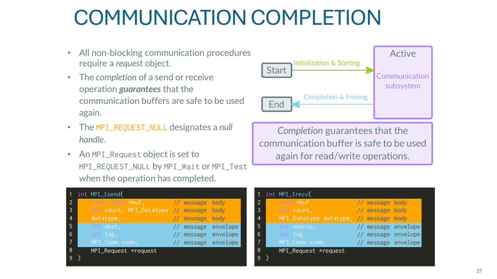
所有非阻塞通信都需要一个 MPI_Request 对象。调用 MPI_Isend/MPI_Irecv 等于把任务交给"通信子系统"，request 就是这次任务的收据。
三阶段生命周期
Start（启动）→ Active（通信子系统正在搬运数据）→ End（完成并释放）。完成的语义是：communication buffer 可以再次安全读 / 写。这才是真正可以复用 buffer 的时机，不是 Isend 返回那一刻。
MPI_REQUEST_NULL
这是一个特殊的"空句柄"常量。当 MPI_Wait/MPI_Test 检测到操作完成后，会自动把 request 设回 MPI_REQUEST_NULL，表示"这个句柄已经没活了，不要再用"。
类比：MPI_Request 像 C++ 的 std::future，MPI_REQUEST_NULL 像默认构造的 future（无关联状态）。
💡 Request 是非阻塞操作的句柄；完成 = buffer 可安全再用；完成后 request 自动归还为 MPI_REQUEST_NULL。
Slide 28 — MPI_Wait vs MPI_Test（阻塞等 vs 非阻塞查）
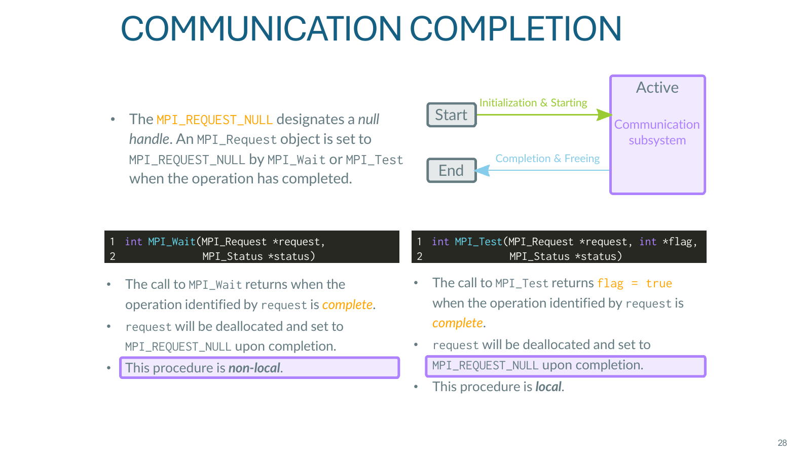
两种"问操作完成了没"的方式：MPI_Wait 阻塞直到完成；MPI_Test 立即返回一个 flag，true 表示完成、false 表示还在跑。
int MPI_Wait(MPI_Request *request, MPI_Status *status);
int MPI_Test(MPI_Request *request, int *flag, MPI_Status *status);
两者完成时都会把 request 设为 MPI_REQUEST_NULL，并把对应消息的 MPI_Status 填回（来源、tag、字节数等）。
local 和 non-local 的关键区别
这是这一页的核心术语。
MPI_Wait = non-local：是否能返回，取决于其它 rank（对方真的把数据送过来了吗）。本地无法独立决定。MPI_Test = local：函数能否立刻返回 不依赖远端。它只是查一下本地状态，无论操作是否完成都立即返回（用 flag 报告结果）。
什么时候用 Test 而不是 Wait
典型场景：计算 / 通信重叠的轮询循环。做一段计算，间或调一次 MPI_Test，完成了就处理收到的数据，没完成就继续算下一段，避免 Wait 把进程卡住浪费 CPU。也可以用 MPI_Testall/MPI_Waitall 一次处理多个 request。
💡 Wait = 阻塞、non-local；Test = 立即返回 + flag、local。语义都是"等到 / 查到完成"，差别只在调用方愿不愿意被卡住。
MPI_Test 已经用 flag 报告完成与否，那 status 还有什么用？
flag 和 status 报告的是两类完全不同的信息：
| 参数 | 类型 | 信息 | 作用 |
|---|
flag | int (0/1) | "完成 / 未完成" | 决定下一步是继续等还是动 buffer |
status | struct | "完成的具体细节" | 实际发件 rank、tag、收到多少元素、错误码 |
行为细则：flag == 0 时 status 内容未定义，别去读；flag == 1 时 status 才被填好，跟 MPI_Recv 返回时一样可用——含 MPI_SOURCE、MPI_TAG、MPI_ERROR 三个公开字段，加上内部消息字节数（用 MPI_Get_count 取）。
什么时候真的需要 status：
Irecv 用了通配符——flag 只告诉你"有消息到了"，但谁发的、tag 几、有多少元素这些只有 status 能给：
MPI_Irecv(buf, count, MPI_INT, MPI_ANY_SOURCE, MPI_ANY_TAG, comm, &req);
// ...
MPI_Test(&req, &flag, &status);
if (flag) {
int from = status.MPI_SOURCE; // 没 status 就不知道是谁发的
int tag = status.MPI_TAG;
int n; MPI_Get_count(&status, MPI_INT, &n);
}
- 错误处理——通信出错时错误码在
status.MPI_ERROR。多 request 一次性测（MPI_Testany/MPI_Testall）时尤其重要，每个 request 的成败要逐个查 status 数组。
什么时候 status 没用：Isend 完成后 status 几乎没有有用信息（无非"发出去了、没出错"），约定俗成传 MPI_STATUS_IGNORE 跳过：
MPI_Test(&req, &flag, MPI_STATUS_IGNORE);
记法：flag 是门铃——告诉你有没有人到；status 是信封——告诉你来的是谁、带了什么。两件事独立但互补。
MPI_Waitall 的调用长什么样？还有哪些"Wait 家族"成员？
函数签名：阻塞直到所有 request 都完成，结束后全部设为 MPI_REQUEST_NULL。
int MPI_Waitall(int count,
MPI_Request array_of_requests[],
MPI_Status array_of_statuses[]);
count —— 数组里有几个 requestarray_of_requests[] —— 要等的 request 数组array_of_statuses[] —— 对应的 status 数组；不在乎传 MPI_STATUSES_IGNORE（注意是复数 STATUSES）
典型场景：邻居 boundary 交换（stencil）。一次同时和左右邻居各 send + recv，4 个 request 一起等：
MPI_Request reqs[4];
MPI_Status stats[4];
MPI_Isend(left_send, N, MPI_DOUBLE, rank-1, 0, comm, &reqs[0]);
MPI_Isend(right_send, N, MPI_DOUBLE, rank+1, 0, comm, &reqs[1]);
MPI_Irecv(left_recv, N, MPI_DOUBLE, rank-1, 0, comm, &reqs[2]);
MPI_Irecv(right_recv, N, MPI_DOUBLE, rank+1, 0, comm, &reqs[3]);
compute_interior_points(); // 通信飞着的同时算内部点
MPI_Waitall(4, reqs, stats); // 一次等齐 4 个
compute_boundary_points(); // 邻居数据已就绪
4 个非阻塞通信先全部启动 → 中间穿插不依赖邻居数据的"内部点"计算 → 最后 Waitall 一次等齐。这就是计算/通信重叠的标准模式。Waitall 比写 4 个 Wait 更安全（一次错位都不会漏）、且 MPI 库可以做内部优化（比如哪个先到先处理哪个）。
动态数量场景：用 std::vector 批量管理：
int n = neighbors.size();
std::vector<MPI_Request> reqs(n * 2);
std::vector<MPI_Status> stats(n * 2);
for (int i = 0; i < n; i++) {
MPI_Isend(send_bufs[i].data(), N, MPI_DOUBLE,
neighbors[i], 0, comm, &reqs[i]);
MPI_Irecv(recv_bufs[i].data(), N, MPI_DOUBLE,
neighbors[i], 0, comm, &reqs[n + i]);
}
compute_interior();
MPI_Waitall(reqs.size(), reqs.data(), stats.data());
邻居数量编译期未知时常见的写法。reqs.data() 取出底层指针给 MPI（C API）。前 n 个是 send 请求，后 n 个是 recv 请求，按约定排好顺序方便后续访问对应 status。
Wait / Test 家族对照：
| 函数 | 行为 |
|---|
MPI_Wait | 阻塞等 1 个 request 完成 |
MPI_Waitall | 阻塞等齐所有 |
MPI_Waitany | 阻塞等任意一个完成就返回，idx 告诉你是数组里第几个 |
MPI_Waitsome | 阻塞等"至少一个完成"就返回，out_count 告诉这批返回了几个 |
MPI_Test* | 对应的立即返回版本（用 flag 报告，不阻塞） |
选择哪个：等齐再统一处理 → Waitall；先到先处理（如 master/worker） → Waitany；"已经到的批量处理掉，剩下的接着等" → Waitsome。
Slide 29 — Non-blocking Collectives（动机与硬约束）
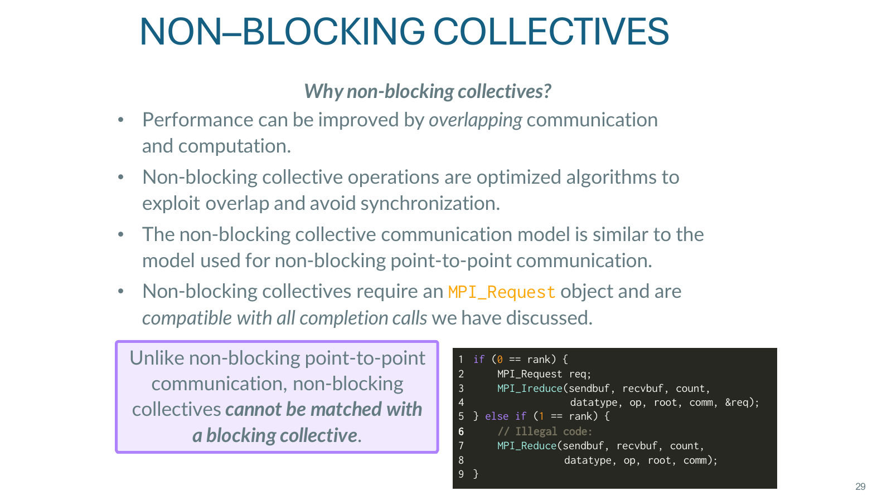
有了非阻塞 P2P，自然会问：collective（Bcast/Reduce/Allreduce...）有没有非阻塞版本？答案是有，叫 non-blocking collectives，每个 collective 都对应一个 I 前缀版本。
动机
同样是"启动操作 → 立即返回 → 后续 Wait"。collective 内部往往要好几轮通信（树形 broadcast、butterfly allreduce），让这些轮次跟本地计算重叠收益更大。MPI 库还可以为非阻塞 collective 选用更激进的、避免同步的优化算法。
用法和 P2P 一致
同样需要 MPI_Request，同样用 MPI_Wait/MPI_Test/MPI_Waitall/MPI_Testall 这一组完成函数 —— 不区分 P2P 还是 collective。
必须配对的硬规则
非阻塞 collective 不能和阻塞 collective 混搭。所有参与该 communicator 的 rank，要么全用 MPI_Ireduce，要么全用 MPI_Reduce。下面是错误示例：
if (0 == rank) {
MPI_Ireduce(sendbuf, recvbuf, count,
datatype, op, root, comm, &req);
} else {
// illegal code
MPI_Reduce(sendbuf, recvbuf, count,
datatype, op, root, comm);
}
原因：MPI 把同一个 collective 在 communicator 上的"次数"当作隐含 tag。混用让两边对算法序列的理解错位，会死锁或拿到错误结果。
💡 Non-blocking collective = collective 操作的"启动 / 完成"分离版；所有 rank 必须步调一致（要么全 I*、要么全阻塞），不能混搭。
Slide 30 — Non-blocking Collectives 的函数原型
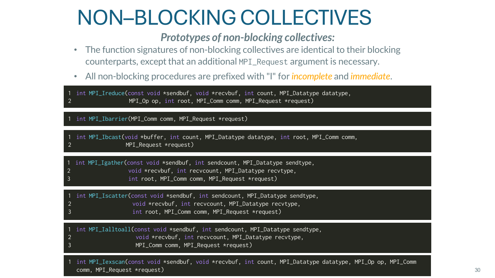
这页把所有常用 collective 的 I 前缀版列出来。规律统一：函数名加 I 前缀，参数列表末尾加一个 MPI_Request *request，其余全部和阻塞版一样。
int MPI_Iallreduce(const void *sendbuf, void *recvbuf, int count,
MPI_Datatype datatype, MPI_Op op,
MPI_Comm comm, MPI_Request *request);
int MPI_Ibarrier(MPI_Comm comm, MPI_Request *request);
int MPI_Ibcast(void *buffer, int count, MPI_Datatype datatype,
int root, MPI_Comm comm, MPI_Request *request);
int MPI_Igather(const void *sendbuf, int sendcount, MPI_Datatype sendtype,
void *recvbuf, int recvcount, MPI_Datatype recvtype,
int root, MPI_Comm comm, MPI_Request *request);
int MPI_Iscatter(...); int MPI_Iallgather(...);
int MPI_Ialltoall(...); int MPI_Iscan(...); int MPI_Iexscan(...);
命名记忆
讲师给的助记词："I" = immediate（立即返回） + incomplete（未完成）。看到 I 前缀就知道：调用立刻回来、需要 request、必须配对 Wait/Test。
💡 所有 collective 都有对应的 I* 版本，签名规则统一：原参数 + MPI_Request * 出参。
Slide 31 — Non-blocking MPI_Ialltoall 实战：3D FFT 流水线
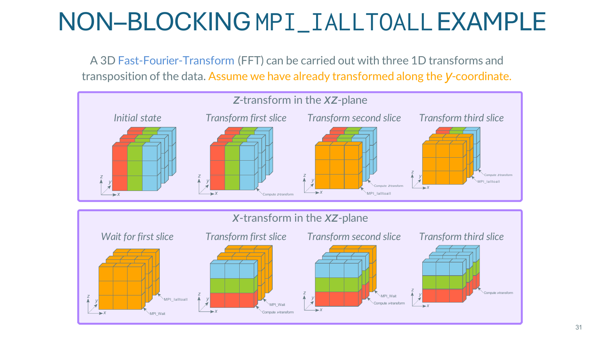
这页是一个具体的"重叠通信和计算"案例。3D FFT（三维快速傅里叶变换）的标准并行做法是：把数据按一个维度切片分布到各 rank，做一次 1D 变换，转置数据让另一个维度变成"本地连续"，再做下一次 1D 变换。三次 1D + 两次转置 = 一次 3D FFT。
为什么转置是 Alltoall
每个 rank 持有的"切片"在转置后要分散到所有别的 rank，每个 rank 也要从所有别的 rank 收一片 —— 这正是 MPI_Alltoall 的形状。
这页的初始假设
已经做完了沿 y 方向的变换。剩下两步：z-变换 → 转置 → x-变换。slide 把数据立方体按 x 方向切成 3 个 slice，每 slice 对应一种颜色。
流水线思路
串行版本：z-transform 整个立方体 → Alltoall 转置 → x-transform。Alltoall 期间 CPU 闲置。
非阻塞版本（slide 上半 + 下半的核心）：
- 对 第 1 个 slice 做 z-transform 计算。
- 计算完，立刻发起
MPI_Ialltoall 转置 第 1 个 slice。
- 同时 CPU 不闲：继续算 第 2 个 slice 的 z-transform。
- 第 2 个 slice 算完，发起它的
Ialltoall；接着开始算第 3 个；中间用 MPI_Wait 等第 1 个的 Alltoall 结束、就立刻开始第 1 个的 x-transform。
结果：z-transform 计算、Alltoall 通信、x-transform 计算三件事在不同 slice 上并行进行，整体时间 ≈ max(计算时间, 通信时间)，而不是它们的和。
对应到 slide 的两行图
- 上行 Z-transform in the XZ-plane：从 Initial state 起逐 slice 做
Compute z-transform，每完成一个就 MPI_Ialltoall。
- 下行 X-transform in the XZ-plane：每个 slice 先
MPI_Wait 等它的 Alltoall 完成（Wait for first slice），然后做 Compute x-transform。
这是 I*-collective 在科学计算里最经典的用法：把"必须做的通信"藏在"必须做的计算"背后。
💡 3D FFT 的重叠流水线 = 把整个立方体按 slice 切分，让 计算 slice k 和 通信 slice k-1 同时跑。MPI_Ialltoall 是这种重叠的关键工具。
FFT 是什么？slide 的立方体里 3 种颜色、9 个方块、3 个 slice 各自代表什么？
FFT (Fast Fourier Transform) = 把数据从空间域 / 时域转换成频域的数学算法。N 个采样点 → N 个频率分量。复杂度 O(N log N)（朴素 DFT 是 O(N²)）。用途：音频压缩、图像滤波、解 PDE、MRI 成像、流体模拟等。
3D FFT 怎么算：沿 3 个轴各做一次 1D FFT。先沿 y 轴做（slide 假设这步已完成），再沿 z 轴，最后沿 x 轴。硬约束：做某个轴的 1D FFT 时，那条轴的整条"铅笔"（pencil，固定其他两轴、该轴取全部值）必须在同一个 rank 内本地。
所以为什么需要 Alltoall：换一个轴做 FFT 之前，必须把数据重新分布，让"下一个要 FFT 的轴"变成本地——这种重分布就是分布式矩阵转置 = MPI_Alltoall。
立方体几何：3×3×3 = 27 个小方块（沿 X、Y、Z 各 3 个）。可以三种切法：
| 切法 | 结果 |
|---|
| 沿 X | 3 列 |
| 沿 Z | 3 行 |
| 沿 Y | 3 个 slice，每个 slice 是一张 XZ 截面，共 3×3 = 9 个方块 |
3 种颜色 = 3 个 rank。"Initial state" 里数据按 X 切给 3 个 rank：
- 红色 = rank 0 拥有 x=0 那一坨（覆盖全部 y、全部 z，9 个方块）
- 绿色 = rank 1 拥有 x=1 那一坨
- 蓝色 = rank 2 拥有 x=2 那一坨
这种"按 X 切片"的分布在 FFT 文献里叫 slab decomposition。它对 z-transform 友好——z-铅笔（固定 x, y，取全部 z）的 3 个点都在同一个 rank 内。
"3 个 slice" 是流水线的粒度：每个 rank 不一次把所有 z-FFT 算完，而是按 y 切成 3 批（slice 1 = y=0 那片、slice 2 = y=1、slice 3 = y=2），每批独立调度。这样：
时间 →
slice 1: z-FFT │ Ialltoall (后台传)│ Wait │ x-FFT
slice 2: │ z-FFT │ Ialltoall │ Wait │ x-FFT
slice 3: │ │ z-FFT │ Ialltoall │ Wait │ x-FFT
任何时刻 CPU 和网络都同时在工作。这就是流水线的意义。
下排颜色变成水平条纹的原因：第一片 Alltoall 完成后，rank 拥有的不再是 YZ 平面而是 XY 平面。新分布下：
- 红色 = rank 0 拥有 z=0 这一行（横向，覆盖全部 x、全部 y）
- 绿色 = rank 1 拥有 z=1 行
- 蓝色 = rank 2 拥有 z=2 行
新分布下 x-铅笔（固定 y, z，取全部 x）变成本地——可以做 x-FFT 了。这正是 Alltoall 转置的目的。
速查表：
| 数字 | 含义 |
|---|
| 3 种颜色 | 3 个 rank（数据被分给 3 个进程） |
| 9 个方块 / slice | 一张 XZ 截面是 3×3 网格 |
| 3 个 slice | 沿 Y 方向有 3 张截面 → 切成 3 批工作 → 流水线 |
| 橙色 | "已变完，进入频域"的标记色 |
| 转置前 / 后颜色方向 | 转置前 = 竖条纹（按 X 切）；转置后 = 横条纹（按 Z 切） |
Slide 32 — 为什么需要并行 I/O
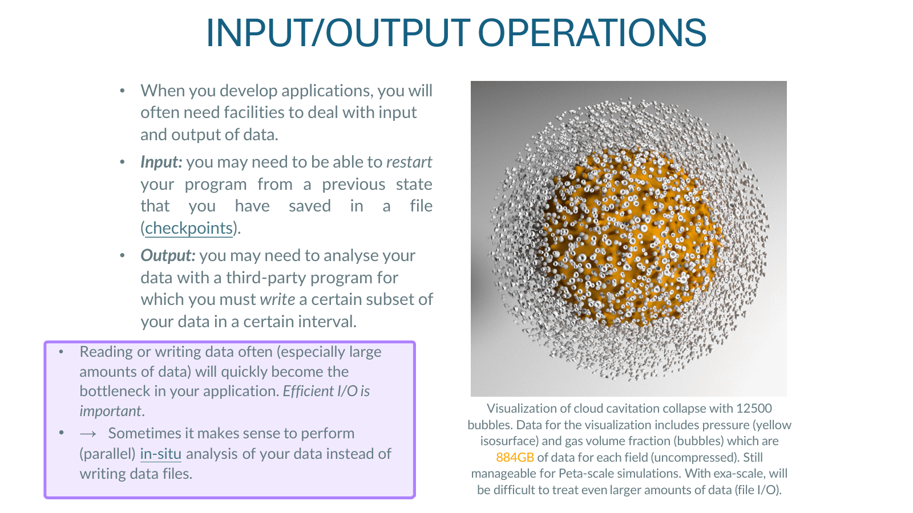
真实科学计算除了"算"还要"读 / 写"。常见 I/O 需求有三种：
- Input：从文件读初始条件，或 从 checkpoint 恢复（长时间作业被中断后从存档继续，不用从头算）。
- Output：把模拟结果写到文件，让第三方工具（ParaView、Python notebook）做后处理 / 可视化 / 统计。
- 定期采样：长时间运行的模拟每隔一段时间 dump 一次状态，既可作 checkpoint 也作中间结果。
为什么是瓶颈
HPC 应用的输出动辄 TB 级 —— slide 给的例子是云空化模拟，884 GB 一次 dump、12500 个气泡 的体积分数场。计算节点本地盘根本放不下，得写到共享并行文件系统（Lustre / GPFS）上，I/O 带宽很快就成新瓶颈。
In-situ 分析
当数据量大到磁盘吞不下时，一种应对方式是 in-situ 分析：不写文件，直接在内存里同步做分析、提取关键统计量、或仅 dump 低分辨率结果。这避开了"先写文件再读回来分析"的双向 I/O 浪费。
💡 I/O 在 HPC 里不是附加品而是头等公民：checkpoint / 后处理 / 大数据分析全靠它。当 I/O 比计算还慢，efficient I/O 才是优化的关键。
"in-situ" 是什么意思？全称是什么？
in situ 是拉丁语原文（不是缩写）：in = 在，situ = situs（位置 / 状态）的夺格形式。整体意思 "在原位 / 在原本的地方"。读音通常是 /ɪn ˈsaɪtuː/（in SY-too）。
HPC 里的 in-situ analysis = 不把模拟结果写到磁盘，直接在模拟运行的同一个 MPI 程序、同一份内存里就把分析做掉。
| 方式 | 流程 |
|---|
| 传统 post-hoc 分析 | 模拟跑 → dump TB 级数据到磁盘 → 模拟结束 → 起分析程序 → 从磁盘读回 → 算统计 / 可视化 |
| In-situ 分析 | 模拟跑 → 每隔 N 步直接在内存里调用分析 → 算统计 / 出图 → 丢掉原始数据 → 模拟继续 |
省了什么：双向磁盘 I/O 开销（先写 TB、再读 TB）。当数据量大到磁盘吞不下时这是唯一可行方案。
这个词在别的领域都是同一个主题——"事情就在它原来的容器里，不搬走"：
- 医学 — "carcinoma in situ" = 原位癌，肿瘤还没扩散
- 建筑 — "cast in situ concrete" = 现场浇筑混凝土，不是预制
- 地质 — "in situ measurement" = 在岩石原本位置测量，不带回实验室
- 生物 — "in situ hybridization" = 在细胞原位做基因杂交
反义对照：
- In situ = 原位（数据不离开模拟进程）
- Ex situ = 离位（数据搬出去再处理） —— 传统先写文件再分析就是 ex-situ 模式
HPC 实战常用的 in-situ 框架：ParaView Catalyst、Ascent、SENSEI。这些库挂到 MPI 模拟程序里，让可视化和分析在模拟过程中实时进行。
Slide 33 — I/O 方案 1：Send to Root（gather + 串行写）
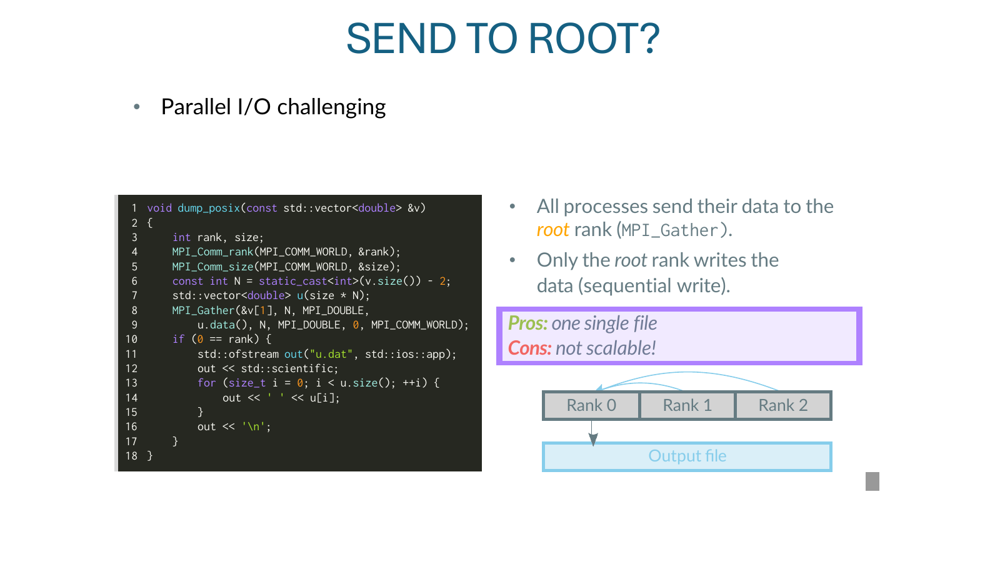
最朴素的并行 I/O 方案：所有 rank 把自己那块数据 MPI_Gather 到 root，只让 root rank 打开文件做串行写入。
slide 上的完整代码（逐行讲解）
场景：每个 rank 持有一段 1D 模拟数据（包含两端的 ghost / halo cell），需要把所有 rank 的"真实数据"拼起来写到磁盘。
void dump_posix(const std::vector<double> &v)
{
函数签名。参数是 const std::vector<double> &v —— const 引用：const 表明本函数不修改 v；引用避免拷贝整个 vector（vector 可能很大，按值传 = 复制一份代价很大）。
int rank, size;
MPI_Comm_rank(MPI_COMM_WORLD, &rank);
MPI_Comm_size(MPI_COMM_WORLD, &size);
MPI 标配开场：取自己的 rank（0..size-1）和 communicator 总进程数 size。这两个值后面都要用——rank 决定"我是不是 root"，size 决定 root 上汇总缓冲区的总长度。
const int N = static_cast<int>(v.size()) - 2;
计算"真实数据"的元素数。-2 表示 v 两端各有一个 ghost cell（halo）——这是 stencil / 邻居通信常见的布局：v[0] 是左邻居发来的边界值，v[v.size()-1] 是右邻居发来的，中间 v[1..v.size()-2] 才是本 rank 自己负责的真实点。
static_cast<int>：v.size() 返回 size_t（无符号），但 MPI 函数和后面的减法都要 int（有符号），显式转一下。
std::vector<double> u(size * N);
预分配汇总缓冲区，长度 = 所有 rank 真实数据总和（size 个 rank × 每个 N 元素）。注意：这一步在每个 rank 上都执行，但只有 root 上的 u 会真正被填——非 root 的 u 是浪费的内存。这是 send-to-root 方案"不可扩展"的第一个迹象：rank 越多每个 rank 都要分配越大的 buffer。更优写法是 if (rank == 0) u.resize(size * N);，这里图省事写一起了。
MPI_Gather(&v[1], N, MPI_DOUBLE,
u.data(), N, MPI_DOUBLE, 0, MPI_COMM_WORLD);
所有 rank 把"真实数据" gather 到 root。逐参数：
&v[1] —— sendbuf 从 v[1] 开始，跳过左 haloN —— 每个 rank 发 N 个元素（也跳过右 halo，因为只发 N 个）MPI_DOUBLE —— sendtypeu.data() —— recvbuf 首地址（只有 root 用）N —— recvcount，从每个 rank 收 N 个（不是总长度）MPI_DOUBLE —— recvtype0 —— root rank 编号MPI_COMM_WORLD —— 通信器
调用结束后，root 上
u[0..N-1] 是 rank 0 的数据，
u[N..2N-1] 是 rank 1 的，依此类推，按 rank 顺序拼接。其他 rank 的 u 内容未定义（是垃圾，但反正下面只有 root 用）。
if (0 == rank) {
Yoda 条件（常量在前）防止手滑写成 0 = rank——编译器会立刻报错，不会变成偷偷的赋值。只有 root 进入下面的写文件分支。
std::ofstream out("u.dat", std::ios::app);
以 append 模式打开文件 u.dat。append（std::ios::app）= 每次写都加到文件末尾，不覆盖。这样每次调 dump_posix（比如每个时间步一次）就追加一行新数据，最终得到一个时间序列。
out 是一个 ofstream 对象，函数结束 scope 时自动析构 → 自动 close 文件，不用手动 close()。
out << std::scientific;
设置 stream 的浮点格式为科学计数法（如 1.234567e-05）。后续所有 << 写 double 都用这个格式。优点：固定有效数字位数，适合数值数据；缺点：每个数值字符串长度仍然不定（指数部分 e-5 vs e+12 长度不一样），所以这种 ASCII 输出无法支持"按 byte offset 并发写"。
for (size_t i = 0; i < u.size(); ++i) {
out << ' ' << u[i];
}
遍历整个 u（size * N 个元素），每个元素前面加一个空格再写。这是简单的 space-separated 文本格式，下游用 numpy/Pandas 一行 loadtxt 就能读。
循环变量用 size_t（无符号）匹配 u.size() 的返回类型，避免 signed/unsigned 比较警告。++i 比 i++ 略快（避免临时变量），写循环时是惯例。
out << '\n';
}
}
所有数据写完后加一个换行，让这次 dump 的输出占一整行（一行 = 一个时间步的全场快照）。
外层 } 闭合 if 分支；内层函数体的最后 } 触发 out 析构 → 自动 flush + close 文件。
非 root 进程：直接跳过 if 分支走到这里，函数返回，u 的内存被释放——它们什么都没干，纯陪跑。
评分
Pros：实现简单，输出 就是一个文件，下游工具直接读。
Cons：完全 不可扩展。所有数据要先汇集到 root（内存上限即 root 节点的 RAM），写文件又只有 root 一个进程在动。rank 数加倍 → 通信加倍、root 内存加倍、写时间不变。8 个 rank 还行，8000 个 rank 直接死。
💡 Send-to-root 是"把并行问题变回串行 I/O"。简单、单文件友好，但 root 是硬瓶颈，规模一上来就崩。
"Pros: one single file" 为什么算优点？为什么不让每个 rank 算偏移并发写同一个文件？
"Pros: one single file" 的对比对象不是这页本身，而是后面要讲的"每 rank 一个文件"方案。这页是把最朴素的基线摆出来，方便后面对比。三个方案排开看：
| 方案 | 输出 | 评价 |
|---|
| A. 每 rank 写自己的文件 | data_0.dat, data_1.dat, ... | 写得快但留下 N 个碎文件，下游要先拼，文件系统 metadata 也吃不消 |
| B. send-to-root（这页） | data.dat 一个文件 | Pros：单文件易用；Cons：root 是瓶颈 |
| C. 每 rank 算偏移并发写同一文件 | data.dat 一个文件 | 正确方向，但要用 MPI-IO 实现，裸 POSIX 反而比 B 还慢 |
"每 rank 算偏移直接 pwrite" 用裸 POSIX 实现的几个坑：
- 文本格式天然不支持 —— 这页代码用的是
scientific 文本输出，每个 double 转字符串后长度不固定（1.234e-5 vs 1.234e+12），算不出每 rank 的字节起始位置。要按 offset 并发写必须改 binary 格式（每 double 固定 8 字节）。
- POSIX 在并行文件系统（Lustre / GPFS）上有锁竞争 —— 多个 rank 同时
pwrite 时，文件系统为保证 read-after-write 一致性会加文件锁，N 大时锁等待严重。
- 元数据服务器（MDS）瓶颈 —— 每个 rank 各自
open 文件会反复打到 MDS。
- 小写入聚合不上 —— 文件系统看不到整体写入模式，没法做条带对齐 / write-back / read-ahead 优化。
MPI-IO 解决上述所有问题（slide 35 会展开）：
MPI_File_open(MPI_COMM_WORLD, "data.dat", MPI_MODE_CREATE | MPI_MODE_WRONLY,
MPI_INFO_NULL, &fh);
MPI_File_write_at_all(fh, my_offset, my_buf, my_count, MPI_DOUBLE, MPI_STATUS_IGNORE);
MPI_File_close(&fh);
关键：_at_all 是 collective 调用——所有 rank 同时调，MPI 库知道整体写入模式，可以做 two-phase I/O：先用网络把小写入聚合成大块、再交给少数几个 "I/O aggregator" rank 写，避开锁竞争和 MDS 压力。
结论：你的直觉"每 rank 算偏移并发写"是对的方向，但要靠 MPI-IO 实现。slide 33 摆 send-to-root 是当反面教材 / 起点，下一两页会推到正确方案。
声明 std::vector<double> u(size * N); 真的就分配了内存吗？只是占个名字也算浪费？
是的——vector(n) 这种带 size 的构造在那一行就立刻 malloc 出 n * sizeof(T) 字节，并把每个元素 default-construct 一遍（double 的 default 是 0.0）。不是惰性分配，不是占位符，是真分配。
vector 的 4 种声明对比：
| 写法 | malloc 了吗 | size() | capacity() | 元素初始化 |
|---|
vector<double> u; | ❌（仅几十字节 header） | 0 | 0 | — |
vector<double> u(100); | ✅ 800 字节 | 100 | 100 | 全 0.0 |
vector<double> u(100, 3.14); | ✅ 800 字节 | 100 | 100 | 全 3.14 |
vector<double> u; u.reserve(100); | ✅ 800 字节 | 0 | 100 | 未初始化 |
slide 33 这行 vector<double> u(size * N); 属于第 2 种。
为什么这是 send-to-root 不可扩展的第一个征兆：
size = 1024 个 rank，N = 1M 个 double / rank
→ size * N = 1G 个 double
→ 每个 rank 上 u 的大小 = 8 GB
→ 1024 个 rank 总共分配 8 TB 内存
→ 其中 1023 个非 root rank 的 8 GB 完全不被读不被写，纯白占
更优写法：
std::vector<double> u;
if (0 == rank) {
u.resize(size * N); // 只 root 分配
}
MPI_Gather(&v[1], N, MPI_DOUBLE,
u.data(), N, MPI_DOUBLE, 0, MPI_COMM_WORLD);
// ↑ 非 root 上 u.data() = nullptr，但 MPI_Gather
// 标准规定 recvbuf 在非 root 上不被使用，传 nullptr 合法
从 Python / JS 来的常见误解：以为"声明只是给变量起个名字，真用时才分配"。C++ 不这样——vector(n) 构造就立刻 malloc + 初始化，没有惰性。等价于 new double[n]()（带括号触发 value-init）。如果只想"先有个名字，以后再用大内存"，写空构造 vector<double> u;，到真要用时再 u.resize(big_size)。
MPI_Gather(&v[1], ...) 里的 v 在每个 rank 上看到的不一样吗？为什么 dump_posix 里没有 MPI_Init？
这两个问题指向同一个本质——MPI 的 SPMD 模型和程序生命周期。
SPMD = Same Program, Multiple Data。mpirun -n 4 启动后，OS 起 4 个完全独立的进程：
- 各自有独立的虚拟地址空间——rank 0 的
0x7ffe1234 和 rank 1 的 0x7ffe1234 指向毫无关系的物理内存
- 各自跑同一份
prog 二进制
- 各自调用
dump_posix(v)，但传进来的 v 是各 rank 自己的 v
同名 ≠ 同份内存。代码里都叫 v，但每个进程的 v 是独立的：
rank 0 进程: v = [halo_L, 1.0, 2.0, 3.0, halo_R]
rank 1 进程: v = [halo_L, 4.0, 5.0, 6.0, halo_R]
rank 2 进程: v = [halo_L, 7.0, 8.0, 9.0, halo_R]
rank 3 进程: v = [halo_L,10.0, 11.0, 12.0, halo_R]
每个 rank 执行 &v[1]，解析出的指针指向自己进程的 v[1]。代码长得一样，但 MPI_Gather 实际收到的数据不同——这正是 Gather 存在的意义：把分散在各 rank 的不同数据通过网络汇总到 root。如果 v 真的"每个 rank 都一样"，Gather 就没必要了。
完整 MPI 程序结构：MPI_Init 是全局事件，整个程序只调一次，必须放在 main() 最外层。dump_posix 不需要也不能再 Init：
int main(int argc, char *argv[]) {
MPI_Init(&argc, &argv); // ① 整个程序的 MPI 上下文
int rank;
MPI_Comm_rank(MPI_COMM_WORLD, &rank);
std::vector<double> v = build_my_local_data(rank); // ② 各 rank 独立构造
for (int step = 0; step < num_steps; ++step) {
evolve(v); // 物理计算（独立）
exchange_halo(v, rank); // halo 交换（用 MPI_Send/Recv）
if (step % 100 == 0) dump_posix(v); // ③ 周期 dump
}
MPI_Finalize(); // ④ 清理
return 0;
}
关键澄清：
v 是用户代码构造的普通 C++ 对象，MPI 不知道也不关心。"v 在每个 rank 上不同"是因为各 rank 的 main 各自调 build_my_local_data(rank) 用自己的 rank 算出来的——和 MPI 无关。dump_posix 里调 MPI_Comm_rank 不是"重新初始化"，而是查询。MPI 库内部缓存了 rank/size，查询调用很便宜，可以在任何函数里反复调。dump_posix 假设两件事：(1) MPI_Init 已经在外层调过；(2) 调用方传进来的 v 已经是该 rank 自己的局部数据。它只负责"汇总数据 + 写盘"。
类比：把 MPI_Init 想成"插上电源 + 把 4 台分散的电脑接到同一个网络"，把 dump_posix 想成"用插好电的电话给 root 打电话汇报数据"。打电话之前必须先插电，但每次打电话本身不重新插电。
Slide 34 — I/O 方案 2：每个 rank 写自己的文件
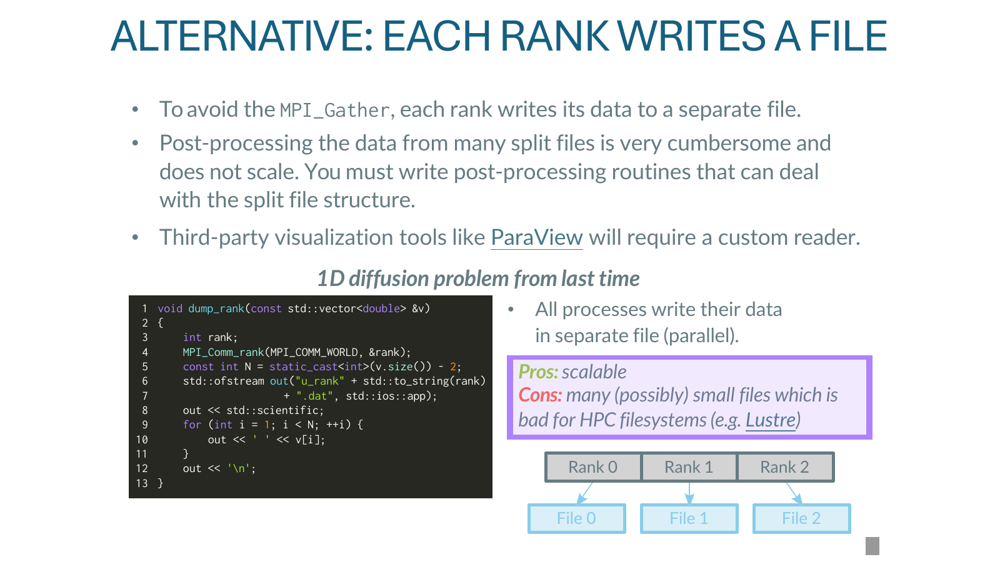
另一极端：放弃合并，每个 rank 独立打开自己的文件（如 u_rank0.dat、u_rank1.dat...）。各写各的，互不干扰。
评分
Pros：完全 scalable，没有单点瓶颈，写入时间 ≈ 单 rank 写自己的数据。
Cons：
- 产出的是 很多 (可能很小的) 小文件。HPC 并行文件系统（Lustre / GPFS）对元数据操作敏感，几千个小文件会拖垮 metadata server。
- 必须自己写 后处理脚本 把分散文件拼回逻辑结构，否则 ParaView 这种第三方工具读不了。
- 分布方式跟 rank 数耦合 —— 用 64 rank 跑出来的输出，下次用 128 rank 再做分析就要重新切。
💡 每 rank 一文件是另一种极端：写得快，但留下一堆碎文件给后处理和文件系统添麻烦。两端都不理想 → 引出真正的解决办法：MPI I/O。
Slide 35 — MPI I/O（所有 rank 协同写同一个文件）
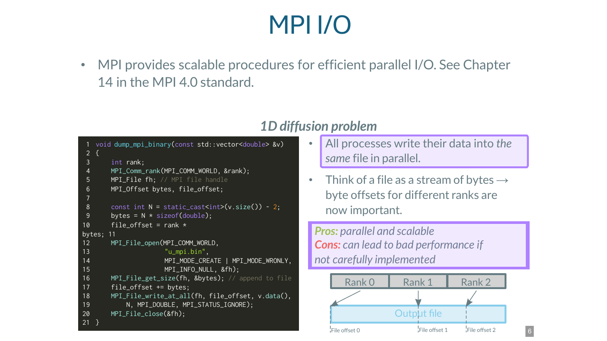
MPI 4.0 标准的 Chapter 14 提供了 并行 I/O，目标是同时拿到上面两种方案的优点：一个文件 + 并行写入。
核心心智模型
把文件看作"一条字节流"，每个 rank 负责其中的一段（slide 原话："a stream of bytes; bytes-offsets for different ranks are now important"）。各 rank 同时 通过 MPI_File_* API 写到同一文件的不同 offset。
slide 上的完整代码（逐行讲解）
场景：所有 rank 协同往同一个二进制文件 u.bin append——每次调用，每个 rank 把自己 N 个 double 的局部数据写到该写的 byte offset 上。
void dump_mpi_binary(const std::vector<double> &v)
{
int rank, size;
MPI_File fh;
MPI_Comm_rank(MPI_COMM_WORLD, &rank);
MPI_Comm_size(MPI_COMM_WORLD, &size);
参数 const std::vector<double> &v：和 slide 33 一样是只读引用，避免拷贝。
MPI_File fh 是 MPI 的文件句柄类型，类似 POSIX 的 int fd，但它由 MPI 库管理（不是 OS 文件描述符）。所有 MPI_File_* 函数都通过它操作文件。
rank、size 后面要用——rank 决定本进程在文件里的偏移位置，size 决定文件总共要扩多大。
MPI_File_open(MPI_COMM_WORLD, "u.bin",
MPI_MODE_CREATE | MPI_MODE_WRONLY,
MPI_INFO_NULL, &fh);
collective 打开文件。逐参数：
MPI_COMM_WORLD —— 所有 rank 一起开（不是各自单独 open）。这是 collective 操作，所有 rank 必须同步调到这里才能往下走。"u.bin" —— 文件名。注意是 .bin，不是 slide 33 的 .dat 文本文件——这次写的是二进制格式。MPI_MODE_CREATE | MPI_MODE_WRONLY —— 文件标志位，按位或拼起来。CREATE = 不存在则创建；WRONLY = 只写（不读）。其他常用 flag 还有 RDONLY、RDWR、APPEND 等。MPI_INFO_NULL —— "info hints"，可以传性能调优提示（条带大小、aggregator 数量等），这里传 NULL 用默认。&fh —— 输出参数，MPI 把分配好的句柄写到这里。
MPI_Offset bytes, file_offset;
const int N = static_cast<int>(v.size()) - 2;
bytes = N * sizeof(double);
MPI_Offset 是 MPI 专用的偏移整型，保证至少 64-bit（即使在 32-bit 系统上）—— 因为科学计算的文件经常超过 4 GB，普通 int / long 装不下。所有"文件位置"和"文件大小"参数都用 MPI_Offset。
N 同 slide 33：跳过两端 halo，只算"真实数据"个数。
bytes = N * sizeof(double)：每个 rank 这次要写多少字节。这是 binary 格式的关键优势——每个 double 固定 8 字节，长度可预先精确算出。slide 33 那种 scientific 文本则不行（数值字符串长度不定）。
MPI_File_get_size(fh, &file_offset);
查询文件当前大小（字节数），写到 file_offset。
为什么取名叫 file_offset 而不是 file_size？因为它的用途是"我这次要从哪里开始 append"——文件当前末尾就是新一轮 dump 的起点。
第一次调用（文件刚 CREATE 时）file_offset = 0；第二次调用（已有上一轮数据）file_offset = 上一轮写入的总字节数。这样多次调用 dump_mpi_binary 会一段段 append，不覆盖。
MPI_File_set_size(fh, file_offset + size * bytes);
预扩展文件大小到本轮写完后的最终大小。新增的字节 = size * bytes（每个 rank 都要写 bytes 字节，共 size 个 rank）。
为什么要 set_size：如果不预扩展，每个 rank 写到自己 offset 时，并行文件系统（Lustre/GPFS）需要"动态扩展文件"——这涉及加锁、更新元数据、可能多个 rank 的写都触发扩展形成竞争。预先一次性设好大小，所有写操作都落在已分配区域里，就避开了这些开销。这是 MPI-IO 性能的小技巧。
注意 set_size 也是 collective——所有 rank 必须同时调，传同样的大小。
MPI_File_write_at(fh, file_offset + rank * bytes, &v[1],
N, MPI_DOUBLE, MPI_STATUS_IGNORE);
每个 rank 把自己的数据写到自己计算出来的 offset。逐参数：
fh —— 文件句柄。file_offset + rank * bytes —— 本 rank 的写入起点（绝对 byte offset）。file_offset 是这一轮 dump 的起点；rank * bytes 是本 rank 在这一轮里相对于起点的偏移：rank 0 从 0 开始、rank 1 从 bytes 开始、rank 2 从 2*bytes 开始……依此类推。每个 rank 算出自己的 offset，互不重叠。&v[1] —— 数据起点，跳过左 halo。N —— 写多少个元素（不是字节数）。MPI_DOUBLE —— 元素类型，告诉 MPI 每个元素 8 字节。MPI_STATUS_IGNORE —— 不在乎 status 信息（写操作的 status 通常没啥用）。
关键：
MPI_File_write_at 是
independent / non-collective 调用——每个 rank 独立调，不要求所有 rank 同步。它的 collective 版本叫
MPI_File_write_at_all，性能更好（MPI 库可以做 two-phase I/O 优化），但要求所有 rank 同时调。
MPI_File_close(&fh);
}
关闭文件——也是 collective 调用，所有 rank 必须一起关。close 触发底层 flush（保证所有 rank 的数据真的落盘）、释放 MPI 库内部的句柄资源、把 fh 设为 MPI_FILE_NULL。
关键 API 速查
| API | 性质 | 作用 |
|---|
MPI_File_open | collective | 所有 rank 一起开，传 MODE_* 标志位、可选 hints |
MPI_File_close | collective | 所有 rank 一起关，触发 flush |
MPI_File_get_size | local | 查询当前文件字节数 |
MPI_File_set_size | collective | 预扩展或截断文件，避开动态扩展锁竞争 |
MPI_File_write_at | independent | 每 rank 独立按 offset 写，不要求同步 |
MPI_File_write_at_all | collective | 同上，但所有 rank 同步调用，库可做 two-phase 聚合优化（性能更好） |
评分
Pros：parallel and scalable —— 一个文件、所有 rank 并行写。
Cons：实现细节没做对会很慢。比如对齐到底层条带边界、collective vs independent 调用的选择，都会大幅影响性能。这就是 slide 上 "can lead to bad performance if not carefully implemented" 的意思。
💡 MPI I/O 把文件当字节流，每 rank 通过 byte-offset 写自己的段；一个文件、并行写，对齐和 collective 调用方式决定性能上限。
Slide 36 — Parallel I/O with HDF5 + MPI
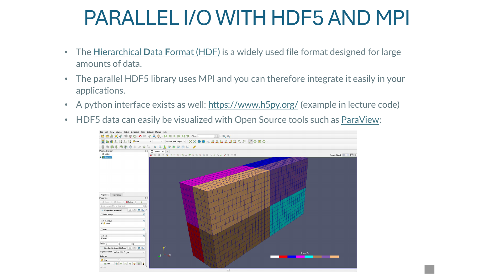
直接用裸 MPI_File_* API 太低级 —— 你得自己管理 offset、字节布局、版本兼容。HDF5（Hierarchical Data Format）是建立在并行 I/O 之上的高层文件格式，专为大数据科学计算设计。
HDF5 提供什么
- 结构化数据模型：文件像一个目录树（groups + datasets），每个 dataset 自带形状、类型、元数据。
- self-describing：读 HDF5 文件的程序不需要事先知道里面是什么 —— 文件自带 schema。
- Parallel HDF5 库底层用 MPI I/O 写文件，所以可以多 rank 同时往一个 HDF5 文件里 append 数据。
生态
有 Python 绑定 h5py，写 HPC 后处理脚本几乎是事实标准。ParaView 这类可视化工具也直接打开 HDF5。
💡 HDF5 = 在 MPI I/O 之上的"带 schema 的并行二进制文件格式"。一个文件 / 自描述 / 工具链丰富，是 HPC 默认输出格式。
Slide 37 — Orthogonality（共享内存与分布式内存是两条独立的轴）
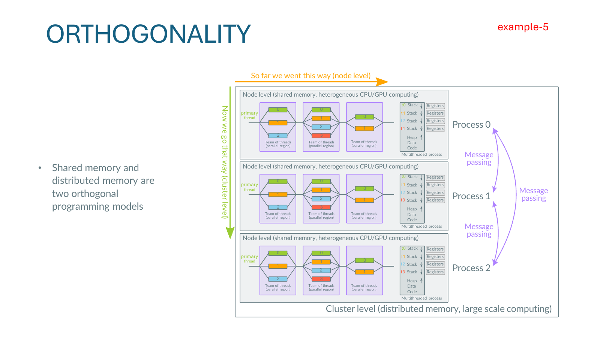
这页是承上启下的概念页。前几次课讲的 OpenMP / 多线程、cache、NUMA 全部是 node level（节点内 / 共享内存）：一个进程多线程共享一片地址空间。从 Lecture 7 开始讲的 MPI 是 cluster level（节点间 / 分布式内存）：不同节点的进程通过显式消息通信。
正交的含义
两个层面 互不依赖、可以自由组合。组合方式有四种：
- 纯线程（一台机器多线程，无 MPI）—— 单节点 OpenMP / pthread。
- 纯 MPI（每个 rank 一线程，可能跨节点）—— 把多核也当独立 rank。
- Hybrid（MPI + OpenMP）—— 节点间用 MPI rank，节点内一个 rank 派多个线程。最常见的高性能配置。
- 都不用—— 单线程串行程序。
为什么 Hybrid 流行
纯 MPI 在大节点上每核一 rank，会造成大量跨核 MPI 通信和重复内存（每 rank 一份缓冲区）。Hybrid 让节点内用快得多的共享内存通信，节点间才走 MPI，同时利用了 NUMA 的局部性和 MPI 的扩展性。
💡 共享内存 (节点内) 和分布式内存 (节点间) 是两条互不干扰的轴。MPI 不替代 OpenMP，它们一起组成 hybrid 模型。
Slide 38 — example-6 Setup（申请节点 + 加载环境）
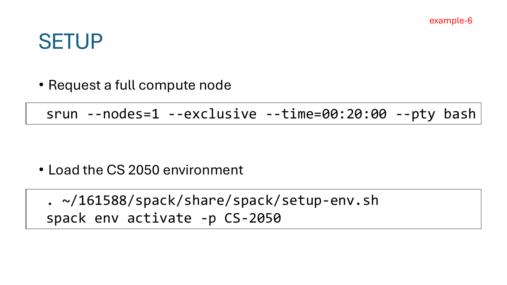
这页是后续上机示例（example-6）的环境准备步骤。两条命令分别解决"在哪运行"和"用什么编译器 / 库"。
srun --nodes=1 --exclusive --time=00:20:00 --pty bash
srun 是 SLURM 的交互作业命令。--nodes=1 申请 1 个节点，--exclusive 独占整节点（不和别人共用 CPU），--time=00:20:00 限时 20 分钟，--pty bash 拿到一个交互 shell。
. ~/161588/spack/share/spack/setup-env.sh
spack env activate -p CS-2050
第一行 source Spack 包管理器 的环境脚本（让 spack 命令可用），第二行激活课程预配的环境（带 -p 时把环境名拼到 prompt 里方便认）。激活后 mpicxx、mpirun 这些工具就指向课程统一的 MPI 实现。
💡 上机两步走：srun 抢节点拿交互 shell；spack env activate 加载课程的 MPI 工具链。
Slide 39 — example-6 题目：用 MPI 算 Euler's number
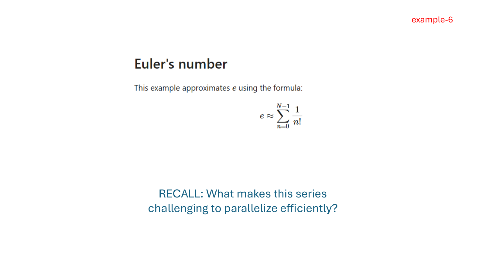
例子要并行计算 e 的级数近似：
e ≈ Σn=0..N-1 1 / n!
难点（slide 上的提问 "what makes this challenging?"）
这个级数的麻烦在于 n! 之间有递推依赖：n! = (n-1)! × n。如果按"算 n!，再算 1/n!，再加进 sum"的串行逻辑，每一项都依赖上一项，先天串行。
并行化思路
把求和按 n 区间切给 p 个 rank，每个 rank 独立累加自己那段：
- 每 rank 在自己的区间 [start, end) 内 从头 算 1/n!（不依赖别的 rank）。可以用对数累加或乘法递推稳定数值。
- 最后用
MPI_Allreduce(&local, &global, 1, MPI_DOUBLE, MPI_SUM, ...) 把所有 rank 的局部和加起来。
这正是上一节学的 collective 应用：每 rank 独立计算 → Allreduce 合并。挑战在于 避免每 rank 重复算 (start)! 的代价，方法是从局部 base 起递推。
完整实现（slide 没贴代码，按上面思路落地）
场景：mpirun -n p ./euler 启动 p 个 rank，每个 rank 算 [start, end) 这段 1/n! 之和，最后 reduce 到 rank 0 输出。
#include <mpi.h>
#include <iostream>
#include <iomanip>
int main(int argc, char *argv[]) {
MPI_Init(&argc, &argv);
int rank, size;
MPI_Comm_rank(MPI_COMM_WORLD, &rank);
MPI_Comm_size(MPI_COMM_WORLD, &size);
MPI 标配开场。<iomanip> 是为了后面 std::setprecision。p 个 rank 各自跑这同一段代码，但 rank 取到不同值（0..p-1），size 在所有 rank 上都是 p。
const int N = 100;
总共算 N 项 1/n!（n = 0..N-1）。N=100 已经远超 double 能区分的精度（n=20 之后每项 < 1e-19，加上去 e 不变），实际只是为了演示。所有 rank 都拿到同一个 N。
int start = (N * rank) / size;
int end = (N * (rank + 1)) / size;
区间划分：把 [0, N) 平均切给 size 个 rank，本 rank 负责 [start, end)。这种"乘后除"的写法比 N / size 商加余数处理更简洁，且自动负载均衡——即使 N 不能整除 size，余数会被自然分摊到前几个 rank 上。
例：N=10, size=3 → rank 0 拿 [0,3)，rank 1 拿 [3,6)，rank 2 拿 [6,10)（多一个）。
double term = 1.0;
for (int k = 1; k <= start; k++) term /= k;
关键步骤：每个 rank 算出自己起点的 1/start!。从 1/0! = 1 开始，逐步除以 1, 2, ..., start，得到 1/start!。
rank 0 时 start=0，循环不执行，term 留 1.0（= 1/0!）。
rank k (k>0) 时 start>0，循环把 term 一路除到 1/start!。
这就是"每 rank 一次性付的代价"——避免了递推依赖：得到 1/start! 后，本 rank 就可以独立用递推往后算，不需要其他 rank 帮忙。
double local_sum = (start < end) ? term : 0.0;
累加器初始值 = 自己第一项（即 1/start!），前提是区间非空。
边界处理：如果 N < size（rank 比项数还多），有些 rank 的 start == end，区间为空，local_sum 设为 0 表示"我啥也没算"。这样后面 Reduce 时它贡献 0，不影响结果。
for (int n = start + 1; n < end; n++) {
term /= n;
local_sum += term;
}
递推主循环：用 1/n! = 1/(n-1)! / n 这个递推关系，每一步只做一次浮点除法 + 一次加法，O(end - start) 时间走完本 rank 的区间。
关键看：term 在循环开始时是 1/start!（上一段算好的），每次 term /= n 后变成 1/n!，加进 local_sum。循环结束时 local_sum = Σ_{n=start..end-1} 1/n!。
如果用朴素方式（每个 n 都重新算 n!），每一项是 O(n)，总共 O(end²)；递推后是 O(end - start)，每 rank 工作量基本均衡。
double e_approx;
MPI_Reduce(&local_sum, &e_approx, 1, MPI_DOUBLE,
MPI_SUM, 0, MPI_COMM_WORLD);
把所有 rank 的 local_sum 加起来给 root。逐参数：
&local_sum —— sendbuf，每 rank 自己的局部和&e_approx —— recvbuf，只有 root 上有意义（其他 rank 这个变量未被填）1 —— 元素个数（就一个 double）MPI_DOUBLE —— 类型MPI_SUM —— 归约操作（其他选项有 MAX/MIN/PROD/MAX_LOC 等）0 —— root 是 rank 0MPI_COMM_WORLD —— 通信器
如果
所有 rank都需要结果（不只 root），改用
MPI_Allreduce，参数列表去掉 root。这里只让 rank 0 打印，所以 Reduce 就够了。
if (rank == 0) {
std::cout << std::setprecision(15)
<< "e ≈ " << e_approx << "\n";
}
MPI_Finalize();
return 0;
}
只让 rank 0 打印，避免 size 个进程同时打印产生重复行。setprecision(15) 让 cout 显示 double 全精度（约 15-17 位有效数字）；正确输出应类似 e ≈ 2.71828182845905。
MPI_Finalize() 清理 MPI 上下文——必须放在所有 MPI 调用之后、return 之前。
跑起来验证
mpicxx -O2 -o euler euler.cpp
mpirun -n 4 ./euler
# 输出: e ≈ 2.71828182845905
无论 -n 1、-n 4 还是 -n 100 都应该输出同一个 e 的值（浮点精度内）——证明并行结果和串行一致。
为什么"每 rank 重新算 1/start!" 不算严重浪费
表面看，rank k 一开始算 1/start! 用了 O(start) = O(k·N/p) 次除法，加起来所有 rank 的"重复工作"是 O(N²/p)。但是：
- 朴素串行用递推也只要 O(N) —— 看起来并行版反而多干了活
- 但实际 N 通常很小（< 30 后每项已小到加不进 double）—— 再多除几下不影响
- 真正大的级数（比如 N=10⁹ 的求和）这种"每 rank 从 base 起递推"的代价相对总工作可以忽略
所以这是用一点冗余计算换掉串行依赖的经典 trick——HPC 里常见模式。
💡 串行依赖（递推）的级数能并行化：让每 rank 从自己的起点重新递推 → MPI_Reduce 求和。代价是 warm-up 冗余计算；实际加速比要看 per-term 计算是否远重于 warm-up（Euler's number 这种每项极便宜的反而加速比 ≈ 1，详见下方 Q&A）。
这段并行实现是不是真的快？rank 3 工作最多吗？rank 0 干完了能干别的吗？有没有更好的划分方式？
这几个追问指向同一个本质："连续切 + 每 rank 自己 warm-up"模式自带负载不均衡，对 Euler's number 这种每项工作量极小的问题，加速比接近 1。下面把分析串成一条线。
每个 rank 的工作量（N=20, p=4 为例）
| rank 0 | rank 1 | rank 2 | rank 3 |
|---|
| start | 0 | 5 | 10 | 15 |
| end | 5 | 10 | 15 | 20 |
| warm-up 除法次数 | 0 | 5 | 10 | 15 |
| 主循环除法次数 | 4 | 4 | 4 | 4 |
| 总计 | 4 | 9 | 14 | 19 |
规律：warm-up 长度 ∝ rank 编号。所以 rank 越靠后越慢——rank 3 一定是最慢的。
时间线：rank 0 干完后只能在 Reduce 处干等
warm-up 和主循环不是分开的"阶段"，是连续指令流。每个 rank 一启动就一路跑到 MPI_Reduce，到达后必须等其他 rank 也到（collective 同步）：
时刻: 0 10 20
│ │ │
rank 0: ▓▓▓▓ ░░░░░░░░░░░░░░░░░░░ Reduce ← 干完后空等 15 单位
rank 1: ▓▓▓▓▓▓▓▓▓ ░░░░░░░░░░░ Reduce ← 等 10
rank 2: ▓▓▓▓▓▓▓▓▓▓▓▓▓▓ ░░░░░ Reduce ← 等 5
rank 3: ▓▓▓▓▓▓▓▓▓▓▓▓▓▓▓▓▓▓▓ Reduce ← 跑满，触发 Reduce 启动
↑ ▓ = 算 │ ░ = 干等
整体 wall time = rank 3 的工作时间。CPU 资源利用率：
- 实际工作 = 4+9+14+19 = 46 单位
- 分配资源 = 4 rank × 19 单位 = 76 单位
- 浪费 = 30 单位（39%）
- 并行效率 = 46/76 ≈ 60%（理想是 100%）
HPC 术语叫 straggler effect / long tail：少数几个慢 rank 拖累整体。在大规模并行（数千 rank）里这是头号性能杀手。
这段代码就是产生不均衡的版本吗？
是。slide 39 给的代码完全是上面分析的"连续切 + 每 rank 自己 warm-up"模式：
int start = (N * rank) / size; // ← 连续切：rank k 拿 [kN/p, (k+1)N/p)
int end = (N * (rank + 1)) / size;
double term = 1.0;
for (int k = 1; k <= start; k++) // ← warm-up：长度 ∝ rank 编号
term /= k;
for (int n = start + 1; n < end; n++) { // ← 主循环：每 rank 都 N/p
term /= n;
local_sum += term;
}
不均衡来自方案本身的内在属性，不是代码写得不好——只要选了"连续切 + 每 rank warm-up"，就一定这样。
更好的划分方式
方案 1：Block + 闭式公式（最简单的修正） —— 不用递推，用 1/n! = exp(-lgamma(n+1))，每项独立 O(1) 算：
for (int n = start; n < end; n++) {
local_sum += std::exp(-std::lgamma(n + 1));
}
每 rank 工作量都是 N/p 次 lgamma 调用，无 warm-up，完全均衡。加速接近线性 p。
方案 2：Cyclic 划分 + 闭式 —— 不连续切，轮流分配：
for (int n = rank; n < N; n += size) { // ← 步长 = size
local_sum += std::exp(-std::lgamma(n + 1));
}
分配方式：
- rank 0: n = 0, 4, 8, 12, 16
- rank 1: n = 1, 5, 9, 13, 17
- rank 2: n = 2, 6, 10, 14, 18
- rank 3: n = 3, 7, 11, 15, 19
注意 cyclic 不能配递推——索引不连续，term /= n 推不过去——所以必须配闭式。
三种划分方式对比
| 划分方式 | 怎么切 | 何时最佳 |
|---|
| Block（连续） | n = start..end-1 | 工作量恒定时简单高效；有 cache locality 优势 |
| Cyclic（轮流） | n = rank, rank+size, ... | 工作量随 n 变化（大头集中在尾部）时自动均衡 |
| Block-Cyclic（块+轮） | 每 rank 拿 K 个连续项，按 K 的间隔轮 | 折中：保留 cache locality + 一定均衡。ScaLAPACK 用这套 |
Cyclic 真正的战场不是 Euler's number（每项都 O(1) 等价），而是每项工作量随 n 增长的问题。例：f(n) 复杂度 O(n) 时，Block 让 rank 3 算最重的尾部，工作量是 rank 0 的 8 倍多；Cyclic 把长短任务交错分配，每 rank 拿到的总工作量接近。
本例最终结论
slide 上那段"用 warm-up 换破除依赖"的代码，对 Euler's number 加速比接近 1（warm-up 抵消了并行收益），它的真实价值是教学演示如何处理串行递推依赖。真正高效的做法是改用闭式公式让每项独立计算（Block + 闭式 或 Cyclic + 闭式 都行），这才能拿到接近线性的加速。这种"用一点冗余 / 换一种公式打破依赖"的思路 → "面对依赖必然损失加速"是 HPC 算法设计里最重要的权衡之一。
Slide 40 — example-7：mpi4py（MPI for Python）
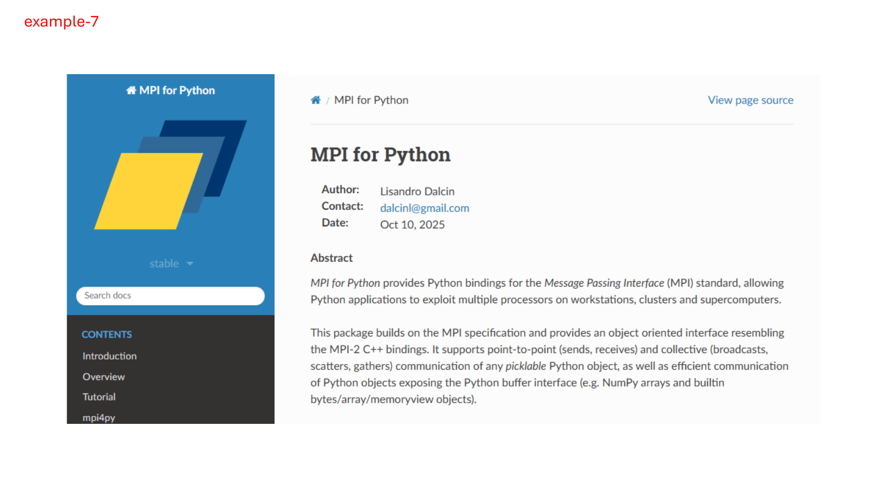
mpi4py 是 MPI 的 Python 绑定，让 Python 代码也能用 MPI 跑分布式并行。两种通信风格：
- Pickle 方式（小写
send/recv）：发送任意可 pickle 的 Python 对象（dict、list、自定义类...）。方便但有序列化开销。
- Buffer 方式（大写
Send/Recv）：直接用 NumPy 数组的 buffer，零拷贝，性能接近原生 C 的 MPI。这是科学计算应该用的形式。
典型用法
from mpi4py import MPI
comm = MPI.COMM_WORLD
rank = comm.Get_rank()
data = np.arange(N, dtype='d') # NumPy buffer
local = data[rank * chunk:(rank+1) * chunk]
total = np.zeros(1, dtype='d')
comm.Allreduce(local.sum(keepdims=True), total, op=MPI.SUM)
实际跑法和 C 一样：mpirun -n 4 python script.py。
💡 mpi4py 把 MPI 全套搬到 Python；大写 API + NumPy buffer 是高性能写法，小写 API + pickle 是便利写法。
Slide 41 — Looking Ahead（章节分隔：转入性能模型）
章节过渡页。前面讲完了"怎么写并行代码"（OpenMP、MPI、I/O），接下来转入"怎么衡量并行代码的性能"：speedup、Amdahl's law、strong / weak scaling。这些是判断"加并行划不划算"的理论工具。
💡 章节切换 —— 从"怎么写"过渡到"怎么衡量"。
Slide 42 — Parallel Speedup（加速比的定义）
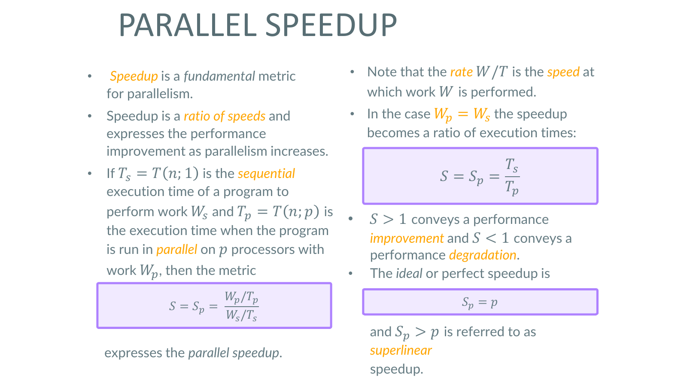
核心定义先记住：
Sp = Ts / Tp
其中 Ts = T(n; 1) 是 串行 执行时间（用 1 个 processor 跑完整问题），Tp = T(n; p) 是 并行 跑同一个问题（在 p 个 processor 上）的时间。
更一般的形式（slide 后半）
当并行版和串行版做的"工作量"相同时（Wp = Ws），speedup 就是执行时间之比。如果两版工作量不同（比如并行版多做了通信开销算入工作量），定义会改成：
S = (Wp / Tp) / (Ws / Ts)
本质是"有效工作率之比"。
三个关键阈值
- S = p：perfect / linear speedup，理想情况，加 p 倍处理器拿 p 倍速度。
- S < p：performance degradation 相对于完美。绝大多数现实程序在这里。
- S > p：super-linear speedup，加速大于处理器数。罕见但真存在 —— 多处理器版每核分到的数据更小、能塞进 cache，命中率猛增带来的红利可能超过线性。
💡 Speedup = T串/T并。理想 S=p，现实 S<p，偶尔 S>p（cache 红利的 super-linear）。
W/T 公式里 W 怎么量化？通信算 work 吗？不算通信，Wp 和 Ws 还会不同吗？
HPC 默认约定：W = FLOPs，通信不算 work，只算 time。通信开销藏在 Tp 里让它变大，自动把 S 拉低，不需要单独量化"通信工作量"。同算法 Wp = Ws 时，公式退化成 S = Ts / Tp。
不算通信，Wp ≠ Ws 的几种常见情形（都是纯本地计算的额外开销，跟字节传输无关）：
| 情形 | Wp 变化 | 例子 |
|---|
| 冗余计算换通信 | Wp > Ws（中幅） | slide 39 Euler warm-up：每 rank 重新算 1/start!，总除法 ≈ pN/2 |
| Halo / ghost cell 重算 | Wp > Ws（小幅） | 5-point stencil，边界点两边都算一遍 |
| 并行友好算法 op 数本就多 | Wp > Ws（理论上） | Hillis-Steele scan：N log N vs 串行的 N-1 |
| 查表 / 配置复制 | Wp = p · Ws | 每 rank 各自构造同一份 lookup table |
| 更聪明的数学方法 | Wp < Ws（罕见） | Multigrid 替代 Jacobi 迭代 |
绝大多数情况 Wp ≥ Ws——"并行有开销"是通则。这就是 W/T 形式的意义：单看 wall time 不公平，把"多做的活"算进效率衡量。
真要量化通信用两套模型（注意它们给的是 Tcomm 不是 Wcomm）：
- α-β 模型：Tcomm = α + β·n。α = 延迟（μs 级），β = 带宽倒数，n = 字节数。
- 算术强度 I = FLOPs / bytes：Roofline model 核心。I 高 = 计算密集（适合并行），I 低 = 通信瓶颈。
结论：除非做 Roofline 分析或比较通信模式，平时只测 Tp，不需要把通信转成 work 数字。
Slide 43 — Amdahl's Law（受 serial fraction 钳制的硬上限）
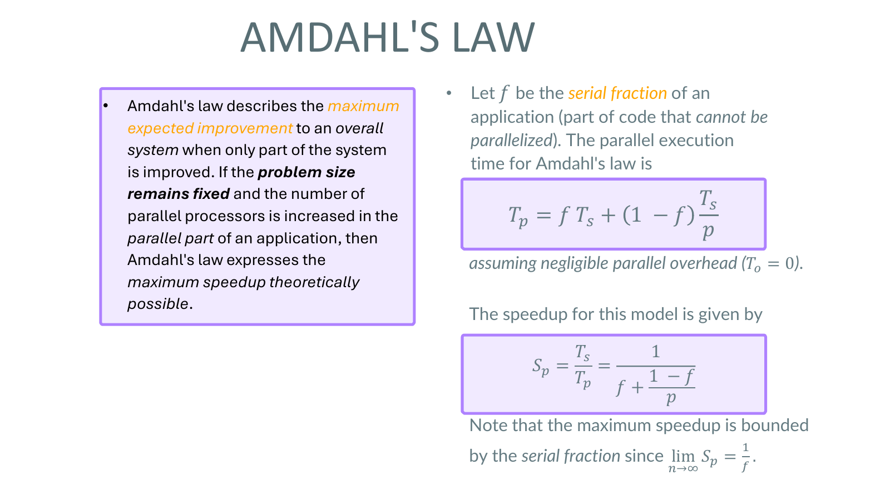
Amdahl's law 描述一个简单事实：程序里那部分天然不能并行的代码，决定了最大加速比的上限。把不可并行的比例记作 f（serial fraction），剩下 (1−f) 是可并行的。
推导（"问题规模固定 + 无并行开销"假设下）
串行总时间是 Ts。其中 f Ts 必须串行跑、(1−f) Ts 可以由 p 个处理器分摊：
Tp = f Ts + (1 − f) Ts / p
所以：
Sp = Ts / Tp = 1 / ( f + (1−f) / p )
关键推论：上限
当 p → ∞，(1−f)/p → 0，于是：
limp→∞ Sp = 1 / f
即使无限多 CPU，加速也封顶在 1/f。f = 5% → 最快也就 20 倍。这就是为什么"先去掉串行瓶颈"比"加更多核"重要 —— 你不能用并行把零变大。
这是 strong scaling 的理论支柱，下页展开。
💡 Amdahl: Sp = 1 / (f + (1−f)/p)，p→∞ 时趋于 1/f。串行比例 f 是绝对天花板。
Slide 44 — Strong Scaling（问题大小不变，加更多核）
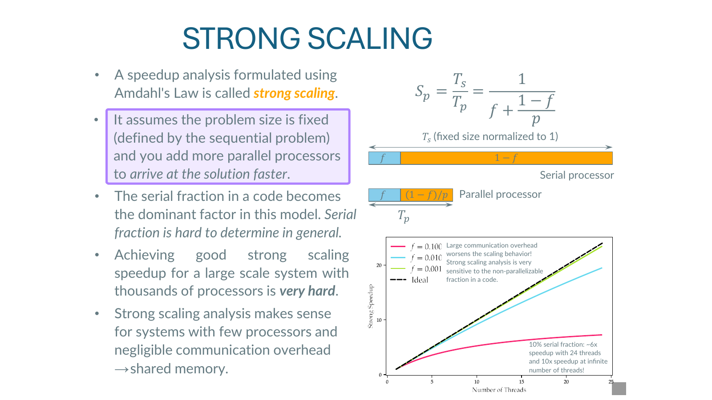
把 Amdahl's law 用在"问题规模 n 固定、改变处理器数 p"的实验里，叫 strong scaling。这是判断已有问题能不能"用更多机器跑得更快"的方法。
预期形态
同 slide 43：随着 p 增大，Sp 一开始接近线性，然后渐渐弯曲、最终封顶在 1/f。曲线弯下来的拐点位置由 f 决定 —— f 越大、拐得越早、越快平台。
slide 右下的图就是这个：横轴 # of Threads / Procs，纵轴 speedup，几条不同 f 的曲线（f=0.5%、0.05%、0.005%）展示了"越小的 f 才能撑到越多核"。
实践问题
- f 一般测不准：现实代码里"哪部分串行"经常隐式（锁竞争、I/O 串行段、跨节点同步），实测 speedup 反推 f 比静态分析靠谱。
- 到一定 p 之后增加并行开销（通信、同步）会反过来吃掉收益，speedup 甚至下降。
- strong scaling 在处理器少 + 通信开销可忽略的场景（节点内共享内存）最适用。
💡 Strong scaling = "n 固定、p 变大"。终极上限是 1/f；现实曲线先线性、再弯、最后平台甚至下降。
Slide 45 — Weak Scaling（每核工作量不变，问题随 p 变大）
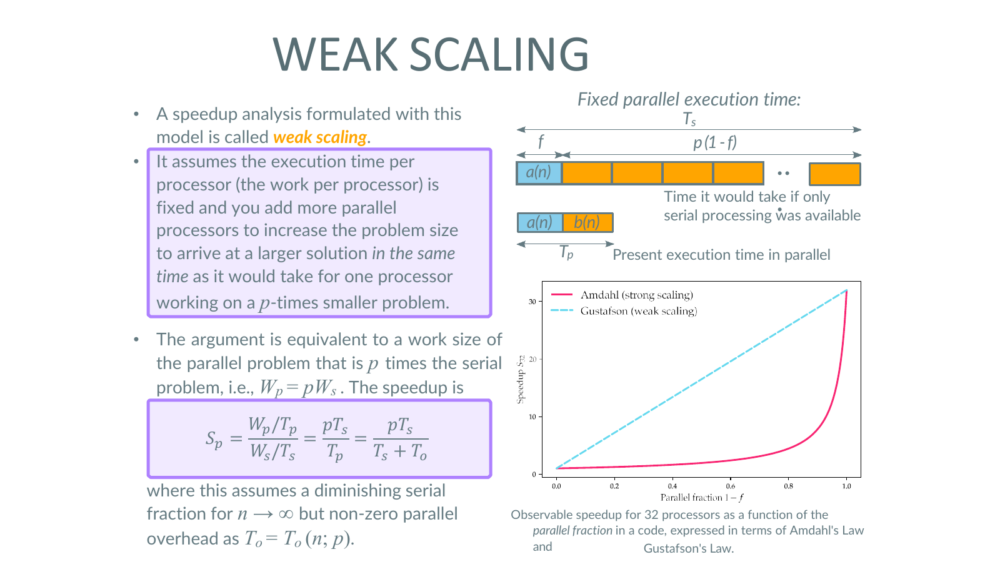
另一种实验设计：固定每个处理器的工作量，处理器越多、问题就越大。比如 1 核处理 100 万格点；100 核就处理 1 亿格点。这叫 weak scaling，对应 Gustafson's law。
动机
HPC 真实需求往往不是"把同一个问题算更快"，而是"用更多机器算更大的问题"。strong scaling 受 Amdahl 钳制，weak scaling 才反映"超算实际能力"。
形式化
设 1 核问题串行时间 Ts，p 核问题工作量是它的 p 倍 —— 即 Wp = p Ws。理想下并行执行时间 Tp 维持常数（每核还是只做 Ws 那么多活）。speedup 定义变成：
Sp = (Wp / Tp) / (Ws / Ts) = (p Ts) / Tp
带上并行开销 To(n; p)：
Tp = Ts + To(n; p)
关键观察：随着 p → ∞，串行小数 (serial fraction) 在 总工作量 中的占比趋近于 0（分母变大）。所以即使有 f，weak scaling 不像 strong scaling 那样硬封顶 —— 只要 To(n; p) 增长不超过 Ts，speedup 可以一直爬。
什么时候用哪个
- 问"能不能在更多核上跑同一问题更快" → strong scaling（Amdahl）。
- 问"能不能在更多核上跑更大问题" → weak scaling（Gustafson）。
大型超算的 benchmark（HPL、HPCG）几乎全是 weak scaling 视角的成绩。
💡 Weak scaling = "每核工作量固定、p 和 n 同步变大"。对应 Gustafson's law；不受 1/f 上限钳制，是 HPC 现实关心的规模化指标。